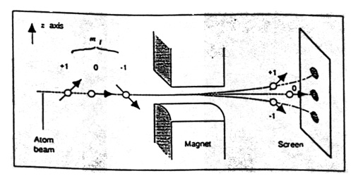

The dialectic spirals onward. At this stage of the game, we should be thinking about some kind of composite "made" of polynomials, which should provide perspective for polynomials, and which can be viewed as a yet higher order generalization of the concept of "number". What we're looking for is a "matrix" aka a "linear transformation" aka an "operator"--even: an "observable". And we'll find hiding within a whole theory of differential equations.
We've already seen matrices and the vector spaces they act upon, only in disguise. Whenever we work with (x, y) or (x, y, z) coordinates, we're already using the idea of a vector space. Integration and differentiation turn out to be linear operators. Mobius transformations can be represented as 2x2 complex matrices with unit determinant. (Plainly, they were linear transformations: they didn't involve powers of $z$ greater than 1.) And matrices/linear transformations in general can furnish representations of symmetry groups, able to do justice to the law of group multiplication which is not necessarily commutative, so that $AB \neq BA$. For example, the order in which you do rotations of a sphere matter.
The unifying concept is that of a vector space. A vector space consists of multidimensional arrows called "vectors" and "scalars," the latter of which are just normal numbers. You can multiply vectors by scalars, and add vectors together, and you'll always get a vector in the vector space. The vector space could have a finite number of dimensions, or even an infinite number.
Indeed, it turns out that polynomials form a vector space. Think of the monomials, the powers of $z$, as being basis vectors! What do I mean?
Implicitly, we've worked with real vector spaces any time we've used $(x, y)$ and $(x, y, z)$ coordinates, projective or otherwise. For polynomials, we're working with a complex vector space: after all, we allow our polynomials to have complex coefficients. (Note we could use other "division algebras" for our scalars: reals, complex numbers, quaternions, or octonions, but complex numbers give us all we need.)
The point is that, real or complex, we can expand a vector in some "basis," in some reference frame, in terms of certain chosen directions. In fact, a vector (as a list of components) is meaningless without reference to which directions each component refers to.
For real 3D vectors, we often use $(1,0,0)$, $(0,1,0)$, and $(0,0,1)$ implicitly as basis vectors. Any 3D point can be written as a linear combination of these three vectors, which are orthonormal: they are at right angles, and of unit length.
Eg. $(x, y, z) = x(1,0,0) + y(0,1,0) + z(0,0,1)$.
But any set of linearly independent vectors can form a basis, although we'll stick to using orthonormal vectors. Linear independence means that each vector can't be written as a linear combination of the other vectors. (A quick way to check: if you stick the vectors together as the columns of a matrix, then this is as much to say: its determinant is not 0.)
In terms of polynomials, the powers in the variable act like basis vectors. If we add two polynomials, the coefficients of $z$ are added to the coefficients of $z$ separately from the coefficients of $z^{2}$, etc.
For real vector spaces, the length of a vector is given by $\sqrt{v \cdot v}$, where $v \cdot v$ is the inner product. In the finite dimensional case, just multiply the entries of the two vectors pairwise and sum. This is just the Pythagorean theorem in disguise. Given $\begin{pmatrix}x \\ y\end{pmatrix}$, its length is $\sqrt{xx + yy}$. This works for any number of dimensions.
You can also take the inner product of two different vectors. $\begin{pmatrix}a & b\end{pmatrix} \begin{pmatrix}c \\ d\end{pmatrix} = ac + bd$. Here the idea is that there are "row vectors" and "column vectors," the row vectors being in the "dual vector space" (this is more important when you work with non-linearly inpendent basis vectors.) The upshot is that juxtaposing a row and a column means: take the inner product. This quantity, also denoted $\vec{u} \cdot \vec{v}$, will be 0 if the vectors are at right angles. It can also be expressed $\vec{u} \cdot \vec{v} = |\vec{u}||\vec{v}|cos(\theta)$, where $|u|$ and $|v|$ are the lengths of the vectors in question, and $\theta$ is the angle between them. From this one can calculate the angle: $\theta = cos^{-1} \frac{\vec{u} \cdot \vec{v}}{|\vec{u}||\vec{v}|}$.
In other words, an inner product gives us a way of defining the lengths and angles of vectors. And there are many different inner products, as we'll see. For example, distance squared in Minkowski space is given by $t^{2} - x^{2} - y^{2} - z^{2}$: the first component (time) has a different sign that the last three (space). We could implement this inner product like this:
$\begin{pmatrix} t_{0} & x_{0} & y_{0} & z_{0} \end{pmatrix} \begin{pmatrix} 1 & 0 & 0 & 0 \\ 0 & -1 & 0 & 0 \\ 0 & 0 & -1 & 0 \\ 0 & 0 & 0 & -1 \end{pmatrix} \begin{pmatrix} t_{1} \\ x_{1} \\ y_{1} \\ z_{1} \end{pmatrix} = t_{0}t_{1} - x_{0}x_{1} - y_{0}y_{1} - z_{0}z_{1} $.
The matrix in the middle is known as the "metric."
We can expand a vector in a given basis by taking the inner product of the vector with each of the basis vectors: $ \mid v_{b} \rangle = \sum_{i} \langle v \mid b_{i} \rangle \mid b_{i} \rangle$. These will be the components of the vector in the new basis.
We could also organize the basis vectors into the columns of a matrix, so that applying the matrix to the vector $M\vec{v} = \tilde{\vec{v}}$ leads to $\tilde{\vec{v}}$ the representation of the same vector in the $M$ basis.
We can see that matrix multiplication is just a generalization of the inner product: it's in fact the inner product of the column vector which each of the rows in turn (or of a row vector with each column vector in turn). We can switch back by multiplying by the inverse of $M$: $M^{-1}\tilde{\vec{v}} = \vec{v}$.
Indeed, $M^{-1}M = I$, the identity matrix. Multiplying matrices $AB$ is just the inner product rule iterated again. The $ M_{i,j}$ component of a matrix, or grid of numbers, is the inner product of the $i$th row of A with the $j$th column of B. And the identity matrix, all zeros with 1's along the diagonal, has the special property that $IA = AI = A$.
The multiplication rule for matrices is noncommutative, but associative--often matrices have inverses--and there's an identity element. It makes sense then that we can often represent symmetry groups (which follow these same axioms) using collections of matrices, encoding group multiplication as matrix multiplication.
Matrix multiplication might preserve some property of the vector. For example, orthogonal real matrices (having orthogonal unit vectors as rows and columns) have the property that $O^{T}O = I$, so that $O^{-1} = O^{T}$, the transpose of O, with rows and columns swapped. These matrices will preserve the length of the vectors they act upon, and they form a group: in this way, they can represent, for example, rotations in any number of dimensions. The generalization of these to complex matrices are the unitary matrices which preserve the length of complex vectors, and for which $U^{\dagger}U = I$, or $U^{-1} = U^{\dagger}$, the conjugate transpose.
Linear transformations allow us to represent shifts in perspective: for example, a scene seen from a rotated or translated point of view. Such shifts in perspective can be defined in terms of what they leave invariant, in other words, what they leave the same.
For example, consider rotations around the Z axis. They leave two points fixed: $(0,0,1)$ and $(0,0,-1)$; we just rotate around the axis they form by a certain angle.
We define the eigenvectors and eigenvalues of a matrix like so:
$M\vec{v} = m\vec{v}$
In other words, on an eigenvector $\vec{v}$, the act of matrix multiplication reduces down to familiar scalar multiplication by the eigenvalue associated to the eigenvector $m$. In other words, $M$ doesn't rotate $\vec{v}$ at all: it just stretches or shrinks (or complex rotates it) it by $m$.
A matrix can be defined in terms of its eigenvalues and eigenvectors, the special directions that it leaves fixed, except for some dilation or complex rotation along that axis. Not all matrices have a complete set of eigenvectors, and sometimes there are different eigenvectors with the same eigenvalue. One interesting fact is that Hermitian matrices, complex matrices for which $H^{\dagger} = H$, have all real eigenvalues and have orthogonal vectors as eigenvectors, and so these eigenvectors form a complete basis, or set of directions, for the vector space in question.
Expressed in its "own" basis, in the basis formed by its eigenvectors, any matrix can be written as a diagonal matrix, and along the diagonal are: the eigenvalues. An n x n "defective matrix" has less than n linearly independent eigenvectors. But if a matrix does have n linearly independent eigenvectors, it can be diagonalized, and its eigenvectors form a basis/coordinate frame for the vector space. A defective matrix can, however, be brought into block diagonal form, which is the next best thing.
Just like a polynomial is "composed of" its complex roots, we could view a matrices as being "composed of" polynomials. And just as polynomials give context to their roots, a matrix gives context to polynomials. In fact, in some sense, a matrix is a polynomial, but possibly distorted in perspective. Here's a nice way of seeing that.
Consider how we find the eigenvectors of a matrix. We'll stick to the finite dimensional 2x2 case.
If we have, $A = \begin{pmatrix} a & b \\ c & d \end{pmatrix}$, we want:
$ A\vec{v} = \lambda\vec{v}$
$ A\vec{v} - \lambda\vec{v} = 0$
$ (A - \lambda I)\vec{v} = 0$
So that:
$\begin{pmatrix} a - \lambda & b \\ c & d - \lambda \end{pmatrix} \begin{pmatrix} v_{0} \\ v_{1} \end{pmatrix} = \begin{pmatrix} 0 \\ 0 \end{pmatrix}$
Therefore, $\begin{pmatrix} a - \lambda & b \\ c & d - \lambda \end{pmatrix}$ shouldn't be invertible: since it has to send $\vec{v}$ to the 0 vector.
A matrix is not invertible if its determinant is 0. So we want:
$\begin{vmatrix} a - \lambda & b \\ c & d - \lambda \end{vmatrix} = 0$
So that: $ (a - \lambda)(d - \lambda) - (b)(c) = 0 $, or:
$ ad - a\lambda -d\lambda + \lambda^{2} - bc = 0$, or:
$ \lambda^{2} - (a + d)\lambda + (ad - bc) = 0$
So the eigenvalues $\lambda_{i}$ are the roots of this polynomial, called the characteristic polynomial.
We can express our matrix in another basis with a change-of-basis transformation:
$A^{\prime} = U^{-1}A U$
We'll find that $A^{\prime}$ has exactly the same eigenvalues. They are invariant under basis transformations. Since the trace is the sum of the eigenvalues, and the determinant is the product of the eigenvalues, they too are left the same. And as mentioned above, if the matrix has a complete set of eigenvectors, than we can always bring it to diagonal form, a matrix of all 0's, with the eigenvalues along the diagonal. $ D = S^{-1}A S$, where $S$'s columns are the eigenvectors.
And so, we can think about the matrix as secretly just being a polynomial, which defines some roots, which are the eigenvalues. But the matrix representation keeps track of the fact that we may be viewing the polynomial in a different basis.
One interesting fact is that the matrix itself is a root of its characteristic polynomial, reinterpreted in terms of matrices. If $f(z) = az^2 + bz + c$ is the characteristic polynomial of a matrix $A$, such that for its eigenvalues $\lambda_{i}$, $f(\lambda_{i}) = 0$, then also $f(A) = aAA + bA + cI = 0$, where the $0$ is the zero matrix.
Another interesting fact is that in quantum mechanics, two observables are "simultaneously measurable" if their Hermitian matrices can be simultaneously diagonalized.
Matrices can be used to solve systems of linear equations.
For example, if we had:
$ax + by + cz = k$
$dx + ey + fz = l$
$gx + hy + iz = m$
We could solve it as a matrix equation:
$\begin{pmatrix} a & b & c \\ d & e & f \\ g & h & i \end{pmatrix}\begin{pmatrix} x \\ y \\ z \end{pmatrix} = \begin{pmatrix} k \\ l \\ m \end{pmatrix} \rightarrow A\vec{x} = \vec{y}$.
We're lucky if A is invertible: Then we can just do: $\vec{x} = A^{-1}\vec{y}$.
Many interesting properties of a matrix become evident when you consider the homogenous case, where $A\vec{x} = \vec{0}$. If this equation is true, it means that $\vec{x}$ is in the "null space" of A, which is a vector space of its own: since you can add two of them together, and get another such vector: $A(\vec{a} + \vec{b}) = 0$, since $A\vec{a} = 0$ and $A\vec{b} = 0$.
One can also investigate the "row" and "column space". The column space is the vector space of all possible outputs of the matrix as a linear transformation. According to the Rank-nullity theorem, the dimension of the nullspace plus the dimension of the column space (the "rank" which is the same as the dimensionality of the row space) = the dimension of the whole vector space. So in a sense, we can define a matrix by what vectors it annihilates.
When one works with differential equations, problems where one is given an algebraic relationship between the derivatives of a function and asked to find a set of equations that satisfy those relationships, for example, wave equations, classical or quantum, one ultimately sets up something like:
$ \hat{H}\phi = 0 $
Even if one starts off with some $\hat{H}\phi = whatever$, one always recasts things to get a homogenous problem, since solutions to such equations form a vector space: and you can solve the inhomogenous equations by adding a particular inhomogenous solution to your sum of homogenous solutions, and so parameterize any solution to the inhomogenous problem. Here's an intuition: when solving the differential equations governing a vibrating 1D string fixed at its ends, to homogenize the problem is as much to consider the string in its equilibrium position as a "reference frame" and describe the string's behavior as deviations from that equilibrium, rather than in terms of the $x$ and $y$ axes.
A bit more:
$\hat{H}$ is a differential operator: some expression involving the variables and the operator $\hat{D}$, which takes a derivative. In a simple, single variable case:
E.g, $y'' + y' - 2y = 0 \rightarrow (\hat{D}^{2} + \hat{D} - 2)y = 0$
Let's consider the polynomial $d^{2} + d - 2 = (d-1)(d+2) = 0$. It has roots at $\{1, -2\}$. The above equation is true if you plug in $\hat{D}$ and $d_{i}$. So we can think about this as the characteristic polynomial of some linear transformation with this matrix:
$ \begin{pmatrix} 1 & 0 \\ 0 & -2 \end{pmatrix}$
If $\lambda$ is a root of the polynomial, then $e^{\lambda x}$ is a solution to the differential equation.
$\frac{d^{2} e^{\lambda x}}{dx^{2}} + \frac{de^{\lambda x}}{dx} - 2e^{\lambda x} = \lambda^{2}e^{\lambda x} + \lambda e^{\lambda x} -2e^{\lambda x} = \lambda^{2} + \lambda - 2 = 0$
So we have two roots and two equations: $e^{x}$ and $e^{-2x}$, and therefore a general solution is a linear combination of them $y = ae^{x} + be^{-2x}$. The solution space forms a two dimensional vector space, and you can freely choose $a$ and $b$ and what you get will satisfy the different equation. If you wanted, you could keep track of that $a$'s and $b$'s separately:
$\frac{dy(x)}{dx} = \hat{H}y(x) \rightarrow y(x) = e^{\hat{H}x}y_0$
Where you can imagine that $y_{0}$ is just the coefficients $a$ and $b$ in a vector.
Indeed: you can see that$ \begin{pmatrix} 1 & 0 \\ 0 & -2 \end{pmatrix}$ acts like taking the derivative of some $\begin{pmatrix} e^{x} \\ e^{-2x} \end{pmatrix}$.
And now a word on complex vector spaces.
For complex vector spaces, we'll use the bracket notation $\langle u \mid v \rangle$, where recall that the $\langle u \mid$ is a bra, which is the complex conjugated row vector corresponding to the column vector $\mid v \rangle$. So the inner product for complex vectors is a complex number, and just as for real vectors, if the vectors are orthogonal, the inner product is 0. We can use the inner product to expand a vector given a set of basis vectors.
Complex vector spaces are a little unfamiliar. Here's some intuition. First of all, notice that when we add two complex vectors, the individual components can cancel out in a whole circle's worth of directions, not just in terms of positive and negative, as real vectors do. This will leads in the end to so-called "quantum intererence."
But here's a little more intuition.
Consider the simplest possible example: a one dimensional complex vector space, which may not even qualify, but let's see. It's just a single complex number: $\alpha = x + iy$. The length of a "vector" is just $\sqrt{\alpha^{*}\alpha} = \sqrt{x^{2} + y^{2}}$. Let's look at the inner product: $\langle b \mid a \rangle = b^{*}a$.
$b^{*}a = (b_{R} - ib_{I})(a_{R} + ia_{I})$
$\rightarrow b_{R}a_{R} + ib_{R}a_{I} - ib_{I}a_{R} + b_{I}a_{I}$
$\rightarrow (b_{R}a_{R} + b_{I}a_{I}) + i(b_{R}a_{I} - b_{I}a_{R})$.
Define $\vec{a} = \begin{pmatrix} a_{R} \\ a_{I} \end{pmatrix}$ to be the 2D real vector corresponding to the real and imaginary parts of the 1D complex vector. Similarly, $\vec{b} = \begin{pmatrix} b_{R} \\ b_{I} \end{pmatrix}$.
We can see that the real part of the 1D complex inner product is just $\vec{b} \cdot \vec{a} = |\vec{a}||\vec{b}|cos(\theta)$, the normal inner product defined on the 2 dimensional real vector space. This is the $(b_{R}a_{R} + b_{I}a_{I})$ term.
But what about the imaginary part?
We could write it like:
$\begin{vmatrix} b_{R} & b_{I} \\ a_{R} & a_{I} \end{vmatrix} = b_{R}a_{I} - b_{I}a_{R}$
We make a matrix with the real vectors $\vec{b}$ and $\vec{a}$ as rows, and find the determinant. This gives us the imaginary part of the complex inner product.
It happens that the determinant $\begin{vmatrix} a & b \\ c & d \end{vmatrix}$ is the signed area of the parallelogram with $\begin{pmatrix} a \\ b \end{pmatrix}$ and $\begin{pmatrix} c \\ d \end{pmatrix}$ as sides.
So: if we have a 1D complex vector space ($x+iy$), we can instead work with a 2D real vector space $\begin{pmatrix} x \\ y \end{pmatrix}$. We can just work with the complex numbers as "arrows in 2D." The inner product between the 2D arrows gives the real part of $\langle b \mid a \rangle$, and the area of the parallelogram formed by the 2D arrows gives the imaginary part of $\langle b \mid a \rangle$.
This generalizes to N-dim complex vector spaces. We can instead work with a 2N-dimensional real vector space. The real part of $\langle b \mid a \rangle$ is given by the sum of all the inner products between the 2D arrows representing the components, and the imaginary part is the sum of all the areas between the 2D arrows representing the components. The imaginary part of the inner product is called a "symplectic" form, an idea which we shall return to.
Alternatively, we could describe $b_{R}a_{I} - b_{I}a_{R}$ as $\begin{pmatrix} b_{R} & b_{I} \end{pmatrix} \begin{pmatrix} a_{I} \\ -a_{R} \end{pmatrix}$.
If you have a 2D vector $\begin{pmatrix} x \\ y \end{pmatrix}$, then $\begin{pmatrix} y \\ -x \end{pmatrix}$ is the former rotated 90 degrees. The arrow to (3,2) is orthogonal to the arrow (2, -3).
So instead of finding the area of the parallelogram formed by $\vec{b}$ and $\vec{a}$, we could rotate $\vec{a}$ 90 degrees, and take the inner product with $\vec{b}$, and get the same answer. And this generalizes as well: we can choose some higher dimensional 90 degree rotation on the 2N real vector space to define the imaginary part of the complex inner product. In other words, $\langle b \mid a \rangle = (\vec{b} \cdot \vec{a}) + i(\vec{b} \cdot \vec{a}_{\perp})$
Two 2D vectors at right angles (say, (1,0) and (0,1)) will have a complex inner product of $0 + i$. Two parallel 2D vectors (say (1,0) and (1,0)) will have a complex inner product of $1 + 0i$. In this case, the complex inner product can only be totally 0 if one of the vectors is (0,0). But once you have an N-dim complex vector space, the vectors can be complex orthogonal to each other: orthogonal to two orthogonal vectors, a line perpendicular to a plane. There is something three-dimensional about the complex inner product.
(If a 90 degree rotation in very high dimensional space seems abstract, just consider, say, for 2D complex, 4D real: $(a, b, c, d) \cdot (b, -a, d, -c) = 0$: just swap and negate.)
Eventually, we'll interpret the complex inner product to represent a probability amplitude. And we'll also show how this notion is intimately tied up with yet more interesting geometry.
Let's look at an example of a complex vector space, really the simplest interesting one: two dimensions.
We've already alluded to the fact that we can treat $\mathbb{C} + \infty$ as a complex projective space: aka the complex projective line. It's just the real projective line (back from our rational number days) complexified! In other words, it's a sphere.
Given some $\alpha$ which can be a complex number or infinity, we can represent it as a complex 2D vector as:
$\alpha \rightarrow \begin{pmatrix} 1 \\ \alpha \end{pmatrix}$ or $\begin{pmatrix} 0 \\ 1 \end{pmatrix}$ if $\alpha = \infty$.
In reverse:
$ \begin{pmatrix} a \\ b \end{pmatrix} \rightarrow \frac{b}{a}$ or $\infty$ if $a=0$.
We're free to multiply this complex vector by any complex number and this won't change the point it represents on the sphere. So our complex 2D vector corresponds to a direction in 3D, a length, and a phase. It can therefore represent a classical spinning object: the direction being the axis of rotation, the length being the speed of rotation, and the phase being how far it's turned around the axis at a given moment. It could also represent an incoming classical photon, which is specified by a 3D direction, with a certain color (length), and polarization (phase). Generally, unnormalized 2D complex vectors are referred to as spinors.
If we normalize the vector so its length is 1, we can view it as the state of a qubit: for example, the spin angular momentum of a spin-$\frac{1}{2}$ quantum particle. In that case, the rotation axis picked out can only be inferred as a statistical average. Looking ahead: supposing we've quantized along the Z-axis, then $aa^{*}$ is the probability of measuring this qubit to be $\uparrow$ along the Z direction, and $bb^{*}$ is the probability of measuring it to be $\downarrow$. Here, "quantized along the Z-axis" just means that we take eigenstates of the Pauli Z operator to be our basis states (so that each component of our complex vector weights one of those eigenstates). The point I want to make here is that the normalization condition is necessary for us to be able to interpret $|a|^{2}$ as a probability.
It's worth noting that if we take the normalization condition, $aa^{*} + bb^{*} = 1$, and expand out the complex and imaginary parts of each, we get: $\alpha^{2} + \beta^{2} + \gamma^{2} + \delta^{2} = 1$. If $\alpha^{2} + \beta^{2} = 1$ is a point on a circle, and $\alpha^{2} + \beta^{2} + \gamma^{2} = 1$ is a point on a sphere, then $\alpha^{2} + \beta^{2} + \gamma^{2} + \delta^{2} = 1$ is a point on a 3-sphere: the 3-sphere lives in four dimensional space, and just as a circle is a 1D space that loops back on itself, so that if you go too far in one direction, you come out in the opposite direction, and the sphere is a 2D space that loops around, you can think of the 3-sphere as a 3D space that if you go forever in one direction, you loop back around. But we also know from the above, that we can break down a point on a 3-sphere as: a point on a 2-sphere, plus a complex phase, a point on the circle. This is known as the "Hopf fibration." The idea is that you can think of the 2-sphere as a "base space" with a little "fiber" (the phase) living above each point. There's actually 4 of these (non-trivial) fibrations, corresponding to the 4 division algebras. The 1-sphere breaks into 1-sphere with a 0-sphere (just two equidistant points!) at each point (related to the reals). The 3-sphere breaks into the 2-sphere with a 1-sphere at each point (related to the complex numbers). The 7-sphere breaks into a 4-sphere with a 3-sphere living at each point (related to the quaternions). And a 15-sphere breaks into an 8-sphere with a 7-sphere living at each point (related to the octonians). Others can go into more detail (such as John Baez)! (There's an interesting connection in the latter two cases between the entanglement between two and three qubits.)
Let's play a little game. On the Riemann sphere, the 6 cardinal points are: $\{1, -1, i, -i, 0, \infty\}$. Let's translate them into spinors.
$ 1 \rightarrow \begin{pmatrix} 1 \\ 1 \end{pmatrix} $, $ -1 \rightarrow \begin{pmatrix} 1 \\ -1 \end{pmatrix} $
$ i \rightarrow \begin{pmatrix} 1 \\ i \end{pmatrix} $, $ -i \rightarrow \begin{pmatrix} 1 \\ -i \end{pmatrix} $
$ 0 \rightarrow \begin{pmatrix} 1 \\ 0 \end{pmatrix} $, $ \infty \rightarrow \begin{pmatrix} 0 \\ 1 \end{pmatrix} $
Notice that these pairs of vectors, which represent antipodal points on the sphere, are in fact: complex orthogonal.
$ \begin{pmatrix} 1 & 1 \end{pmatrix} \begin{pmatrix} 1 \\ -1 \end{pmatrix} = 0$
$ \begin{pmatrix} 1 & -i \end{pmatrix} \begin{pmatrix} 1 \\ -i \end{pmatrix} = 0$
$ \begin{pmatrix} 1 & 0 \end{pmatrix} \begin{pmatrix} 0 \\ 1 \end{pmatrix} = 0$
Now here's something implict in what we've already said:
If you have a set of eigenvalues and eigenvectors, you can work backwards to a matrix representation by first forming a matrix whose columns are the eigenvectors. Call it $C$. Take its inverse: $C^{-1}$. And then construct $D$, a matrix with the eigenvalues along the diagonal. The desired matrix: $M = CDC^{-1}$.
But first recall that to find the inverse of a 2x2 matrix $A = \begin{pmatrix} a & b \\ c & d \end{pmatrix}$: $A^{-1} = \frac{1}{det(A)} \begin{pmatrix} d & -b \\ -c & a \end{pmatrix}$.
For example:
$C = \begin{pmatrix} 1 & 1 \\ 1 & -1 \end{pmatrix}$, $C^{-1} = -\frac{1}{2} \begin{pmatrix} -1 & -1 \\ -1 & 1 \end{pmatrix}$, $D = \begin{pmatrix} 1 & 0 \\ 0 & -1 \end{pmatrix}$
$X = CDC^{-1} = \begin{pmatrix} 0 & 1 \\ 1 & 0 \end{pmatrix}$
$C = \begin{pmatrix} 1 & 1 \\ i & -i \end{pmatrix}$, $C^{-1} = \frac{i}{2} \begin{pmatrix} -i & -1 \\ -i & 1 \end{pmatrix}$, $D = \begin{pmatrix} 1 & 0 \\ 0 & -1 \end{pmatrix}$
$Y = CDC^{-1} = \begin{pmatrix} 0 & -i \\ i & 0 \end{pmatrix}$
$C = \begin{pmatrix} 1 & 0 \\ 0 & 1 \end{pmatrix}$, $C^{-1} = \begin{pmatrix} 1 & 0 \\ 0 & 1 \end{pmatrix}$, $D = \begin{pmatrix} 1 & 0 \\ 0 & -1 \end{pmatrix}$
$Z = CDC^{-1} = \begin{pmatrix} 1 & 0 \\ 0 & -1 \end{pmatrix}$
import numpy as np
import qutip as qt
def LV_M(L, V):
to_ = np.array(V).T
from_ = np.linalg.inv(to_)
D = np.diag(L)
return qt.Qobj(np.dot(to_, np.dot(D, from_)))
Xp = np.array([1, 1])
Xm = np.array([1, -1])
X = LV_M([1, -1], [Xp, Xm])
Yp = np.array([1, 1j])
Ym = np.array([1, -1j])
Y = LV_M([1, -1], [Yp, Ym])
Zp = np.array([1, 0])
Zm = np.array([0, 1])
Z = LV_M([1, -1], [Zp, Zm])
print(X, qt.sigmax())
print(Y, qt.sigmay())
print(Z, qt.sigmaz())
These are the famous Pauli matrices. We can see that X+ and X- are eigenvectors of the Pauli X matrix, and when it acts on them, it multiplies X+ by 1, and X- by -1. Similarly, for Pauli Y and Z.
One nice thing about them is we have a new way of extracting the (x, y, z) coordinate of a spinor $\psi$. Instead of getting the ratio of the components and stereographically projecting to the sphere, we can form:
$(\langle \psi \mid X \mid \psi \rangle, \langle \psi \mid Y \mid \psi \rangle, \langle \psi \mid Z \mid \psi \rangle)$
(You could think of $\langle \psi \mid X \mid \psi \rangle$ as an inner product where the metric is given by Pauli X.)
Another way of thinking about it is as an expectation value. In statistics, an expectation value, for example, one's expected "winnings," is just: a sum over all the rewards/losses weighted by the probability of the outcome. As we said before, if we have normalized complex vectors, we can interpret the inner product $\langle \phi \mid \psi \rangle = \alpha$ as a "probability amplitude"-- the corresponding probability is $|\langle \phi \mid \psi \rangle|^{2} = \alpha^{*}\alpha$, in other words, the area of the square on the hypoteneuse of the complex number as 2D arrow.
It turns out we can rewrite things like this:
$\langle \psi \mid X \mid \psi \rangle = \sum_{i} \lambda_{i} |\langle v_{i} \mid \psi \rangle|^{2} $
We get the probabilities that $\psi$ is in each of the eigenstates, and multiply them by the corresponding eigenvalues (which is like the "reward/loss"), and sum it all up. And so, we can interpret the (x, y, z) coordinates of our point in a statistical sense, as expectation values.
Indeed, the Pauli matrices are Hermitian: meaning they are equal to their own conjugate transpose, and they have real eigenvalues and a complete set of orthogonal eigenvectors: and so this statistical interpretation works (we'll never get an imaginary expectation value, for example).
Here's a more geometrical way of thinking about it. We could choose any two antipodal points on the sphere and form a Hermitian matrix with eigenvalues ${1, -1}$ out of them. This defines an oriented axis. Suppose you have a point on the sphere representing $\psi$. Project that point perpendicularly onto the axis defined by the Hermitian matrix. This divides that line segment into two pieces.
Imagine that the line is like an elastic band that snaps randomly at some location, and then the two ends are dragged to the two antipodal points, carrying the projected point with it. The projected point will end up at one or other of the two antipodes with probabilites $|\langle v_{1}\mid\psi\rangle|^{2} = \frac{1 + \vec{\psi} \cdot \vec{v_{1}}}{2}$ and $|\langle v_{-1}\mid\psi\rangle|^{2} = \frac{1 + \vec{\psi} \cdot \vec{v_{-1}}}{2}$.
And so the expectation value will be: the coordinate of that point in the chosen direction with (0,0,0) being the origin.
$ (1)\frac{1 + \vec{\psi} \cdot \vec{v_{1}}}{2} + (-1)\frac{1 + \vec{\psi} \cdot \vec{v_{-1}}}{2} = \frac{1}{2} ( \vec{\psi} \cdot \vec{v_{1}} - \vec{\psi} \cdot \vec{v_{-1}} ) = \frac{1}{2} ( \psi \cdot ( \vec{v_{1}} - \vec{v_{-1}} ))$.
But we know that $\vec{v_{1}}$ and $\vec{v_{-1}}$ are antipodal $\vec{v_{-1}} = -\vec{v_{1}}$: , so: $\frac{1}{2} ( \vec{\psi} \cdot ( 2\vec{v_{1}}))$ = $\vec{\psi} \cdot v_{1}$, which is indeed: the coordinate of the (x, y, z) vector $ \vec{\psi}$ in the chosen direction.
Archimedes's tombstone famously was a sphere inscribed in a cylinder.
What he had discovered is that cylindrical projection preserves area.
We've already discussed the stereographic projection from the sphere to the plane which is conformal, or "angle preserving." Cylindrical projection, in contrast, projects each point on the sphere outward onto a surrounding cylinder, and preserves area.
This amounts to what we've just been doing:
Probability amplitudes live in sphere-world, while probabilities live on the line. And here's the connection: if we choose a point uniformly randomly on the sphere, we are as much choosing a point uniformly randomly on the line: since the cylindrical projection preserves area or "measure" (up to some constant factor). (That this works for higher dimesional spheres and simplices isn't trivial and underlies the general interpretation of complex vectors as furnishing probability amplitudes!) Cf. this. It's all about the relationship between the 1-norm of probabilities: $1 = a + b + c$, and the 2-norm of amplitudes: $1 = |\alpha|^{2} + |\beta|^{2} + |\gamma|^{2}$.
Matrices themselves actually form vector spaces, and naturally the Pauli matrices are orthogonal from this perspective. The inner product that's relevant is: $tr(B^{\dagger}A)$.
For example, $ tr(\begin{pmatrix} 0 & -i \\ i & 0 \end{pmatrix}\begin{pmatrix} 0 & 1 \\ 1 & 0 \end{pmatrix}) = tr(\begin{pmatrix} -i & 0 \\ 0 & i \end{pmatrix}) = 0$.
In fact, any 2x2 Hermitian matrix can be written as a real linear combination of Pauli's: $tI + xX + yY + zZ$: the Pauli matrices form a basis. And so it's easy to write the Hermitian matrix corresponding to any axis.
Moreover, we can use the Pauli's to do rotations.
We already know about the famous expression for the exponential function:
$e^{x} = \sum_{n=0}^{\infty} \frac{x^{n}}{n!} = \frac{1}{0!} + \frac{x}{1!} + \frac{x^{2}}{2!} + \frac{x^{3}}{3!} + \frac{x^{4}}{4!} + \dots$
Well, why not try plugging a matrix into it instead of a scalar?
$e^{X} = \sum_{n=0}^{\infty} \frac{X^{n}}{n!} = \frac{I}{0!} + \frac{X}{1!} + \frac{X^{2}}{2!} + \frac{X^{3}}{3!} + \frac{X^{4}}{4!} + \dots$, where the powers are interpreted as $X$ matrix multiplied by itself $n$ times.
Here's a way to think about this. We find the eigenvalues and eigenvectors of $X$ and diagonalize it with a basis transformation. For a diagonal matrix: $\begin{pmatrix} \lambda_{0} & 0 \\ 0 & \lambda_{1} \end{pmatrix}$, where the $\lambda$'s are the eigenvalues, $e^{\begin{pmatrix} \lambda_{0} & 0 \\ 0 & \lambda_{1} \end{pmatrix}}$ is just the naive: $\begin{pmatrix} e^{\lambda_{0}} & 0 \\ 0 & e^{\lambda_{1}} \end{pmatrix}$. Then use the inverse transformation to return to the standard basis. Now you have your matrix exponential.
So what does $e^{Xt}$ do? It implements a boost in the X direction on a spinor.
Before we stuck an $i$ in the exponential and got: a parameterization of 2D rotations: $e^{i\theta} = cos(\theta) + i sin(\theta)$. As $\theta$ goes on, $e^{i\theta}$ winds around the circle, tracing out a cosine along the x-axis and a sine along the y-axis.
Similarly, if we stick an $i$ in the matrix exponential and use our Pauli's, we can get a 3D rotation. For example: $e^{-iX\frac{\theta}{2}}$ implements a 3D rotation around the X axis by an angle $\theta$. $e^{-iY\frac{\theta}{2}}$ similarly rotates around the Y-axis. The minus sign is conventional, and the $\frac{1}{2}$ is there because SU(2) is the double cover of SO(3) (the group of normal 3D rotations), but we'll leave it to the side for now, but shows up in the way that the overall phase rotates during a rotation of the sphere. As it well known, a spinor rotated a full turn goes to the negative of itself, and requires two full turns to come back to itself completely. We'll return to this later.
These rotation matrices are unitary matrices: they preserve the norms of vectors. (And in fact they are special unitary matrices.) If you exponentiate a Hermitian matrix, you get a unitary matrix: if you think about a Hermitian matrix as a (perhaps multidimensional) pole, then the unitaries are like rotations around that pole. Another interpretation, statistically: as rotations preserve the length of a vector, unitary matrices preserve the fact that probabilities sum to 1.
Indeed, $e^{iHt}$ turns out to be the general form of time evolution in quantum mechanics. $\psi(x, t) = e^{iHt}\psi(x,0)$, where $H$ is the operator representing the energy, the Hamiltonian, is just another way of writing the Schrodinger equation: $\frac{d\psi(x,t)}{dt} = -iH\psi(x, t)$.
The rotation matrices form a representation of the group $SU(2)$, which is an infinite continuous symmetry group. For each element in the group, there is a corresponding matrix. This is how representation theory works: finding a certain group of interest to be a subgroup of the a matrix group, and better yet if the representation is unitary because then you can do quantum mechanics!
The Pauli matrices are generators for $SU(2)$. And you can think about $SU(2)$ as itself being a manifold, a kind of space, where each point in the space is a different matrix, and (to simpify things) the generators tell you how to go in different directions in this space, like a tangent space.
Elements of $SU(2)$ can be written as some $tI + ixX + iyY + izZ$, and we can can construct elements of a one-parameter subgroup with $e^{iHt}$, where $t$ is the parameter, and $H$ is a 2x2 Hermitian matrix. In other words, we can implement rotations.
If we put rotations and boosts together, we get $SL(2, \mathbb{C})$, the Lorentz group in disguise. And in fact, they are nothing other than the Mobius transformations from before.
Indeed: given a Mobius transformation $f(z) = \frac{az + b}{cz + d}$ with $ad - bc \neq 0$ acting on $\mathbb{C} + \infty$, we can make the $SL(2, \mathbb{C})$ matrix $\begin{pmatrix} a & b \\ c & d \end{pmatrix}$ with $det = 1$ , which, as we know, are generated by the Pauli matrices: $X, Y, Z$ for boosts, and $iX, iY, iZ$ for rotations (6 generators in all)-- and act on spinors (and on matrices too for that metter ). So there you go.
Because they have determinant 1, they preserve the Lorentz metric. Matrices with determinant 1 preserve the determinant of matrix they act upon. One forms the Hermitian matrix: $H = tI + xX + yY + zZ = \begin{pmatrix}t+z & x-iy \\ x+iy & t-z \end{pmatrix}$. The determinant of this matrix is $ (t+z)(t-z) - (x-iy)(x+iy) = t^{2} - z^{2} - y^{2} - z^{2}$, and so when acted upon $M^{\dagger}HM$ where $M$ is an $SL(2,\mathbb{C}))$ matrix, the Lorentz norm is preserved.
But let's return to polynomials for a moment with the aim of interpreting n-dimensional complex vectors in one very useful way.
First, I want to point out that moving from $\mathbb{C} + \infty$ aka $\mathbb{CP}^{1}$ to $\mathbb{C}^{2}$ is just like considering "a root" vs a "monomial."
Suppose we have a polynomial with a single root, a monomial: $f(z) = c_{1}z + c_{0}$. Let's solve it:
$ 0 = c_{1}z + c_{0}$
$ z = -\frac{c_{0}}{c_{1}} $
Indeed, we could have written $f(z) = (z + c_{0}/c_{1})$. The point is that the monomial $f(z) = c_{1}z + c_{0}$ can be identified with its root up to multiplication by any complex number--just like our complex projective vector!
If we had some complex number $\alpha$, which we upgraded to a complex projective vector, we could turn it into a monomial by remembering about that negative sign:
$\alpha \rightarrow \begin{pmatrix} 1 \\ \alpha \end{pmatrix} \rightarrow f(z) = 1z -\alpha $
$\begin{pmatrix} c_{1} \\ c_{0} \end{pmatrix} \rightarrow f(z) = c_{1}z - c_{0} \rightarrow \frac{c_{0}}{c_{1}} $
But what if $\alpha = \infty$? We suggested that this should get mapped to the vector $\begin{pmatrix} 0 \\ 1 \end{pmatrix}$.
Interpreted as a monomial this says that $f(z) = 0z - 1 = -1 \neq 0$. Which has no roots! Indeed, we've reduced the polynomial by a degree: from degree 1 to degree 0. However, it makes a lot of sense to interpret this polynomial as having a root at $\infty$.
And this works in the higher dimensional case too. Suppose we fix the dimension of our vector space to be 4. So we have all the polynomials: $az^{3} + bz^{2} + cz^{1} + d$, but what if $a$ and $b$ were both 0? The polynomial in itself doesn't remember how many higher powers there could have been. So we add two roots at infinity to keep track of things.
So we have a rule: if we lose a degree, we add a root at $\infty$.
There's a more systematic way to deal with this. We homogenize our polynomial. In other words, we add a second variable so that each term in the resulting two-variable polynomial has the same degree. One effect that this has is that if you plug 0 into all the variables then the polynomial evaluates to 0: in the previous case, if there was a constant term, $f(0)$ couldn't be $0$.
So, we want to do something like:
$f(z) = c_{1}z + c_{0} \rightarrow f(w, z) = c_{1}z + c_{0}w$
Suppose we want $f(w, z)$ to have a root $\begin{pmatrix} 1 \\ 0 \end{pmatrix}$. In other words, we want $f(1, 0) = 0$. Then we should pick $f(w, z) = 1z + 0w = z$, which has a root when $z=0$ and $w$ is anything. If we want $f(w, z)$ to have a root $\begin{pmatrix} 0 \\ 1 \end{pmatrix}$, aka $f(0, 1) = 0$, then $f(w, z) = 0z + 1w = w$, which has a root when $w=0$ and $z$ is anything. So we have it now that a $z$-root lives at the North Pole, and a $w$-root lives at the South Pole.
We also have to consider the sign. If we want $f(w, z)$ to have a root $\begin{pmatrix} 2 \\ 3 \end{pmatrix}$, aka $f(2, 3) = 0$, then we want $f(w, z) = 2z - 3w$, so that $f(2, 3) = 2(3) - 3(2) = 0$.
So the correct homogenous polynomial with root $\begin{pmatrix} c_{1} \\ c_{0} \end{pmatrix}$ is $f(w, z) = c_{1}z - c_{0}w$. Or the other way around, if we have $f(w, z) = c_{1}z + c_{0}w$, then its root will be $\begin{pmatrix} c_{1} \\ -c_{0} \end{pmatrix}$, up to overall sign.
The representation of a qubit as a point on the sphere (plus phase) often goes by the name: the Bloch sphere representation. Using the above construction, we can generalize this into the Majorana sphere, which can represent any spin-$j$ state, not just a spin-$\frac{1}{2}$ state, as a constellation of points on the sphere. In other words, we can generalize the above interpretation in terms of the sphere to n-dimensional complex vectors--we'll return to the physical interpretation momentarily. The crucial fact is that there is a representation of Pauli X, Y, and Z on complex vector spaces of any dimension.
If a degree 1 polynomial represents a spin-$\frac{1}{2}$ state (with a corresponding 2D complex vector), a degree 2 polynomial represents a spin-$1$ state (with a corresponding 3D complex vector), a degree 3 polynomial represents a spin-$\frac{3}{2}$ state (with a corresponding 4D complex vector), and so on.
Considering the roots, instead of the coefficients, this is saying that up to a complex phase, a spin-$\frac{1}{2}$ state can be identified with a point on the sphere, a spin-$1$ state with two points on the sphere, a spin-$\frac{3}{2}$ state with three points on the sphere. And the Pauli matrices of that dimensionality generate rotations of the whole constellation.
In other words, somewhat magically, we can take a normalized spin-$2j$ state, which lives in $2j+1$ complex dimensions ($4j+2)$ real dimensions), and which therefore represents a point on a $(4j+1)$-sphere, as a unique constellation of $2j$ points on the $2$-sphere (plus phase)!
And all we're really doing is just finding the roots of a polynomial.
This construction is due to Ettore Majorana, and is often known as the "stellar representation" of spin, and the points on the sphere are often referred to as "stars." The theory of quantum spin, therefore, becomes in many ways the theory of "constellations on the sphere."
So far example, we could have a degree 2 polynomial. For simplicity, let's consider one that has two roots at $\begin{pmatrix} 2 \\ 3 \end{pmatrix}$.
We want: $f(w,z) = (2z - 3w)^2 = (2z - 3w)(2z - 3w) = 4z^2 - 12zw + 9w^2$.
If we want a polynomial with two roots at $\begin{pmatrix} 1 \\ 0 \end{pmatrix}$, we want $f(w, z) = z^2$. If we want a polynomial with two roots at $\begin{pmatrix} 0 \\ 1 \end{pmatrix}$, we want $f(w, z) = w^2$. If we want a polynomial with one root at $\begin{pmatrix} 1 \\ 0 \end{pmatrix}$ and one root at $\begin{pmatrix} 0 \\ 1 \end{pmatrix}$, we want $f(w, z) = zw$.
Indeed, we can use these last three as basis states. Let's take a look:
$ \begin{array}{ |c|c|c| } \hline z^{2} & z & 1 \\ \hline z^{2} & zw & w^{2} & & homogeneous \ roots & roots \\ \hline \hline 1 & 0 & 0 & \rightarrow f(w, z) = z^{2} = 0 & \{ \begin{pmatrix} 1 \\ 0 \end{pmatrix}, \begin{pmatrix} 1 \\ 0 \end{pmatrix} \} & \{ 0, 0 \}\\ 0 & 1 & 0 & \rightarrow f(w, z) = zw = 0 & \{\begin{pmatrix} 1 \\ 0 \end{pmatrix}, \begin{pmatrix} 0 \\ 1 \end{pmatrix} \} & \{ 0, \infty \}\\ 0 & 0 & 1 & \rightarrow f(w, z) = w^{2} = 0 & \{ \begin{pmatrix} 0 \\ 1 \end{pmatrix}, \begin{pmatrix} 0 \\ 1 \end{pmatrix}\} & \{ \infty, \infty\}\\ \hline \end{array} $
So we have three basis states $z^{2}$, $zw$, and $w^{2}$, and they correspond to three constellations, albeit simple ones. The first constellation has two stars at the North Pole. The second has one star at the North Pole and one star at the South Pole. And the third has two stars at the South Pole.
Now the interesting fact is that any 2-star constellation can be written as a complex superposition of these three constellations. We just add up the three monomials, each weighted by some complex factor, and get a polynomial. The stars are just given by the roots of the homogenous polynomial (or the single variable polynomial with the rule about roots at infinity.)
There's one more subtlety which we need to take into account in order to be consistent with how the X, Y, Z Pauli operators are defined (we'll learn how to actually construct the higher dimensional Pauli's later).
Here's the overview:
If we have a spin state in the usual $\mid j, m \rangle$ representation, quantized along the Z-axis, we can express it as a n-dimensional ket, where $n = 2j + 1$. E.g, if j = $\frac{1}{2}$, the dimension of the representation is 2, and the possible $m$ values are $\frac{1}{2}, -\frac{1}{2}$; for j = $1$, the dimension is 3, and the possible $m$ values are $1, 0, -1$, and so on. Again we'll return to the interpretation momentarily.
So we have some spin state: $\begin{pmatrix} a_{0} \\ a_{1} \\ a_{2} \\ \vdots \\ a_{n-1} \end{pmatrix}$
The polynomial whose $2j$ roots correspond to the correct stars, taking into account all the secret negative signs, etc, is given by:
$p(z) = \sum_{m=-j}^{m=j} (-1)^{j+m} \sqrt{\frac{(2j)!}{(j-m)!(j+m)!}} a_{j+m} z^{j-m}$.
$p(z) = \sum_{i=0}^{i=2j} (-1)^{i} \sqrt{\begin{pmatrix} 2j \\ i \end{pmatrix}} a_{i} z^{2j-i}$, where $\begin{pmatrix} n \\ k \end{pmatrix}$ is the binomial coefficient aka $\frac{n!}{k!(n-k)!}$.
Or homogenously, $p(w, z) = \sum_{i=0}^{i=2j} (-1)^{i} \sqrt{\begin{pmatrix} 2j \\ i \end{pmatrix}} a_{i} z^{2j-i} w^{i}$.
This is known as the Majorana polynomial. Why does the binomial coefficient come into play? I'll just note that $\begin{pmatrix} 2j \\ i \end{pmatrix}$ is the number of groupings of $2j$ roots taken 0 at a time, 1 at a time, 2 at a time, 3 at a time, eventually $2j$ at a time. That's just the number of terms in each of Vieta's formulas, which relate the roots to the coefficients! So when we go from a polynomial $\rightarrow$ the $\mid j, m \rangle$ state, we're normalizing each coefficient by the number of terms that contribute to that coefficient.
Let's check this out.
We'll look at the eigenstates of the X, Y, Z operators for a given spin-$j$. X, Y, Z goes from left to right, and the vertical placement of each sphere is given by its $m$ value. Try changing the $j$ value!
import numpy as np
import qutip as qt
import vpython as vp
np.set_printoptions(precision=3)
scene = vp.canvas(background=vp.color.white)
##########################################################################################
# from the south pole
def c_xyz(c):
if c == float("Inf"):
return np.array([0,0,-1])
else:
x, y = c.real, c.imag
return np.array([2*x/(1 + x**2 + y**2),\
2*y/(1 + x**2 + y**2),\
(1-x**2-y**2)/(1 + x**2 + y**2)])
# np.roots takes: p[0] * x**n + p[1] * x**(n-1) + ... + p[n-1]*x + p[n]
def poly_roots(poly):
head_zeros = 0
for c in poly:
if c == 0:
head_zeros += 1
else:
break
return [float("Inf")]*head_zeros + [complex(root) for root in np.roots(poly)]
def spin_poly(spin):
j = (spin.shape[0]-1)/2.
v = spin
poly = []
for m in np.arange(-j, j+1, 1):
i = int(m+j)
poly.append(v[i]*\
(((-1)**(i))*np.sqrt(np.math.factorial(2*j)/\
(np.math.factorial(j-m)*np.math.factorial(j+m)))))
return poly
def spin_XYZ(spin):
return [c_xyz(root) for root in poly_roots(spin_poly(spin))]
##########################################################################################
def display(spin, where):
j = (spin.shape[0]-1)/2
vsphere = vp.sphere(color=vp.color.blue,\
opacity=0.5,\
pos=where)
vstars = [vp.sphere(emissive=True,\
radius=0.3,\
pos=vsphere.pos+vp.vector(*xyz))\
for i, xyz in enumerate(spin_XYZ(spin.full().T[0]))]
varrow = vp.arrow(pos=vsphere.pos,\
axis=vp.vector(qt.expect(qt.jmat(j, 'x'), spin),\
qt.expect(qt.jmat(j, 'y'), spin),\
qt.expect(qt.jmat(j, 'z'), spin)))
return vsphere, vstars, varrow
##########################################################################################
j = 3/2
XYZ = {"X": qt.jmat(j, 'x'),\
"Y": qt.jmat(j, 'y'),\
"Z": qt.jmat(j, 'z')}
for i, o in enumerate(["X", "Y", "Z"]):
L, V = XYZ[o].eigenstates()
for j, v in enumerate(V):
display(v, vp.vector(3*i,3*L[j],0))
spin = v.full().T[0]
print("%s(%.2f):" % (o, L[j]))
print("\t|j, m> = %s" % spin)
poly_str = "".join(["(%.1f+%.1fi)z^%d + " % (c.real, c.imag, len(spin)-k-1) for k, c in enumerate(spin_poly(spin))])
print("\tpoly = %s" % poly_str[:-2])
print("\troots = ")
for root in poly_roots(spin_poly(spin)):
print("\t %s" % root)
print()
So we can see that the eigenstates of the X, Y, Z operators for a given spin-$j$ representation correspond to constellations with $2j$ stars, and there are $2j+1$ such constellations, one for each eigenstate, and they correspond to the following simple constellations:
For example, if $j=\frac{3}{2}$ and we're interested in the Y eigenstates: 3 stars at Y+, 0 stars at Y-; 2 stars at Y+, 1 stars at Y-; 1 star at Y+, 2 stars at Y-; 0 stars at Y+, 3 stars at Y-.
We could choose X, Y, Z or some combination thereof to be the axis we quantize along, but generally we'll choose the Z axis.
The remarkable fact is that any constellation of $2j$ stars can be written as a superposition of these basic constellations. We simply find the roots of the corresponding polynomial.
Finally, let's check our "group equivariance."
In other words, we treat our function $f(w, z)$ as a function that takes a spinor/qubit/2d complex projective vector/spin-$\frac{1}{2}$ state as input. So we'll write $f(\psi_{little})$, and it's understood that we plug the first component of $\psi_{little}$ in for $w$ and the second component in for $z$. And we'll say $f(\psi_{little}) \Rightarrow \psi_{big}$, where $\psi_{big}$ is the corresponding $\mid j, m \rangle$ state of our spin-$j$ . If $\psi_{little}$ is a root, then if we rotate it around some axis, and also rotate $\psi_{big}$ the same amount around the same axis, then $U_{little}\psi_{little}$ should be a root of $U_{big}\psi_{big}$.
import numpy as np
import qutip as qt
import vpython as vp
scene = vp.canvas(background=vp.color.white)
##########################################################################################
# from the south pole
def c_xyz(c):
if c == float("Inf"):
return np.array([0,0,-1])
else:
x, y = c.real, c.imag
return np.array([2*x/(1 + x**2 + y**2),\
2*y/(1 + x**2 + y**2),\
(1-x**2-y**2)/(1 + x**2 + y**2)])
# np.roots takes: p[0] * x**n + p[1] * x**(n-1) + ... + p[n-1]*x + p[n]
def poly_roots(poly):
head_zeros = 0
for c in poly:
if c == 0:
head_zeros += 1
else:
break
return [float("Inf")]*head_zeros + [complex(root) for root in np.roots(poly)]
def spin_poly(spin):
j = (spin.shape[0]-1)/2.
v = spin if type(spin) != qt.Qobj else spin.full().T[0]
poly = []
for m in np.arange(-j, j+1, 1):
i = int(m+j)
poly.append(v[i]*\
(((-1)**(i))*np.sqrt(np.math.factorial(2*j)/\
(np.math.factorial(j-m)*np.math.factorial(j+m)))))
return poly
def spin_XYZ(spin):
return [c_xyz(root) for root in poly_roots(spin_poly(spin))]
def spin_homog(spin):
n = spin.shape[0]
print("".join(["(%.2f + %.2fi)z^%dw^%d + " % (c.real, c.imag, n-i-1, i) for i, c in enumerate(spin_poly(spin))])[:-2])
def hom(spinor):
w, z = spinor.full().T[0]
return sum([c*(z**(n-i-1))*(w**(i)) for i, c in enumerate(spin_poly(spin))])
return hom
def c_spinor(c):
if c == float('Inf'):
return qt.Qobj(np.array([0,1]))
else:
return qt.Qobj(np.array([1,c])).unit()
def spin_spinors(spin):
return [c_spinor(root) for root in poly_roots(spin_poly(spin))]
##########################################################################################
j = 3/2
n = int(2*j+1)
spin = qt.rand_ket(n)
print(spin)
h = spin_homog(spin)
spinors = spin_spinors(spin)
for spinor in spinors:
print(h(spinor))
print()
dt = 0.5
littleX = (-1j*qt.jmat(0.5, 'x')*dt).expm()
bigX = (-1j*qt.jmat(j, 'x')*dt).expm()
spinors2 = [littleX*spinor for spinor in spinors]
spin2 = bigX*spin
print(spin2)
h2 = spin_homog(spin2)
for spinor in spinors2:
print(h2(spinor))
Now let's watch it evolve. You can display a random spin-$j$ state and evolve it under some random Hamiltonian (some $2j+1$ by $2j+1$ dim Hermitian matrix) and watch its constellation evolve, the stars swirling around, permuting among themselves, seeming to repel each other like little charged particles. Meanwhile, you can see to the side the Z-basis constellations, and the amplitudes corresponding to them: in other words, the yellow arrows are the components of the spin vector in the Z basis.
And you can check, for instance, that the whole constellation rotates rigidly around the X axis when you evolve the spin state with $e^{iXt}$, for example.
import numpy as np
import qutip as qt
import vpython as vp
scene = vp.canvas(background=vp.color.white)
##########################################################################################
# from the south pole
def c_xyz(c):
if c == float("Inf"):
return np.array([0,0,-1])
else:
x, y = c.real, c.imag
return np.array([2*x/(1 + x**2 + y**2),\
2*y/(1 + x**2 + y**2),\
(1-x**2-y**2)/(1 + x**2 + y**2)])
# np.roots takes: p[0] * x**n + p[1] * x**(n-1) + ... + p[n-1]*x + p[n]
def poly_roots(poly):
head_zeros = 0
for c in poly:
if c == 0:
head_zeros += 1
else:
break
return [float("Inf")]*head_zeros + [complex(root) for root in np.roots(poly)]
def spin_poly(spin):
j = (spin.shape[0]-1)/2.
v = spin
poly = []
for m in np.arange(-j, j+1, 1):
i = int(m+j)
poly.append(v[i]*\
(((-1)**(i))*np.sqrt(np.math.factorial(2*j)/\
(np.math.factorial(j-m)*np.math.factorial(j+m)))))
return poly
def spin_XYZ(spin):
return [c_xyz(root) for root in poly_roots(spin_poly(spin))]
##########################################################################################
def display(spin, where, radius=1):
j = (spin.shape[0]-1)/2
vsphere = vp.sphere(color=vp.color.blue,\
opacity=0.5,\
radius=radius,
pos=where)
vstars = [vp.sphere(emissive=True,\
radius=radius*0.3,\
pos=vsphere.pos+vsphere.radius*vp.vector(*xyz))\
for i, xyz in enumerate(spin_XYZ(spin.full().T[0]))]
varrow = vp.arrow(pos=vsphere.pos,\
axis=vsphere.radius*vp.vector(qt.expect(qt.jmat(j, 'x'), spin),\
qt.expect(qt.jmat(j, 'y'), spin),\
qt.expect(qt.jmat(j, 'z'), spin)))
return vsphere, vstars, varrow
def update(spin, vsphere, vstars, varrow):
j = (spin.shape[0]-1)/2
for i, xyz in enumerate(spin_XYZ(spin.full().T[0])):
vstars[i].pos = vsphere.pos+vsphere.radius*vp.vector(*xyz)
varrow.axis = vsphere.radius*vp.vector(qt.expect(qt.jmat(j, 'x'), spin),\
qt.expect(qt.jmat(j, 'y'), spin),\
qt.expect(qt.jmat(j, 'z'), spin))
return vsphere, vstars, varrow
##########################################################################################
j = 3/2
n = int(2*j+1)
dt = 0.001
XYZ = {"X": qt.jmat(j, 'x'),\
"Y": qt.jmat(j, 'y'),\
"Z": qt.jmat(j, 'z')}
state = qt.rand_ket(n)#qt.basis(n, 0)#
H = qt.rand_herm(n)#qt.jmat(j, 'x')#qt.rand_herm(n)#
U = (-1j*H*dt).expm()
vsphere, vstars, varrow = display(state, vp.vector(0,0,0), radius=2)
ZL, ZV = qt.jmat(j, 'z').eigenstates()
vamps = []
for i, v in enumerate(ZV):
display(v, vp.vector(4, 2*ZL[i], 0), radius=0.5)
amp = state.overlap(v)
vamps.append(vp.arrow(color=vp.color.yellow, pos=vp.vector(3, 2*ZL[i], 0),\
axis=vp.vector(amp.real, amp.imag, 0)))
T = 100000
for t in range(T):
state = U*state
update(state, vsphere, vstars, varrow)
for i, vamp in enumerate(vamps):
amp = state.overlap(ZV[i])
vamp.axis = vp.vector(amp.real, amp.imag, 0)
vp.rate(2000)
It's worth noting: if the state is an eigenstate of the Hamiltonian, then the constellation doesn't change: there's only a phase evolution. Perturbing the state slightly from that eigenstate will cause the stars to precess around their former locations. Further perturbations will eventually cause the stars to begin to swap places, until eventually it because visually unclear which points they'd been precessing around.
Check out perturb_spin.py! Choose a $j$ value, and it'll show you a random constellation evolving under some random Hamiltonian. We also color the stars and keep track of their paths (which is a little tricky since the roots are in themselves unordered). You can clear the trails with "c", toggle them with "t". You can stop and start evolving with "p", get a new random state with "i", and choose a new random Hamiltonian with "o." Use "e" to measure the energy: it'll collapse to an energy eigenstate, and you'll see its fixed constellation. The phase is shown as a yellow arrow above. Finally, use "a/d s/w z/w" to rotate along the X, Y, and Z directions. Use them to perturb the spin out of its energy eigenstate and watch the stars precess. Precession is what spinning objects like to do, like spinning tops, like the rotating earth whose axis precesses over some 26,000 years, swapping the seasons as it goes.
Now you might wonder: in the above simulations, we evolve our state vector by some tiny unitary at each time step, convert it into a polynomial, break it into its roots, and display them as points on the sphere. Is there some way of taking a Hamiltonian and an initial constellation and getting the time evolution of the individual stars themselves? In other words, can we calculate $\dot{\rho}(t) $ for each of the roots $\rho_{i}$?
Here's how:
Suppose we have a polynomial with two roots $f(z) = (z-\alpha)(z-\beta)$. We could consider the roots to be evolving in time: $f(z, t) = (z-\alpha(t))(z-\beta(t))$. Since the roots determine the polynomial (up to a factor), this is a perfectly good way of parameterizing the time evolution of $f(z, t)$. So we get:
$f(z, t) = z^{2} - \alpha(t)z - \beta(t)z + \alpha(t)\beta(t)$.
Let's consider the partial derivative with respect to time, leaving $z$ as a constant.
$\frac{\partial f(z, t)}{\partial t} = -\dot{\alpha}(t)z - \dot{\beta}(t)z + \alpha(t)\dot{\beta}(t) + \dot{\alpha}(t)\beta(t) = \dot{\alpha}(t)\big{(}\beta(t) - z \big{)} + \dot{\beta}(t)\big{(}\alpha(t) - z \big{)}$.
We've used the chain rule which says that $\frac{d x(t)y(t) }{dt} = x(t)\frac{dy(t)}{dt} + \frac{dx(t)}{dt}y(t)$.
Let's also consider the partial derivative with respect to $z$ leaving $t$ as a constant.
$\frac{\partial f(z,t)}{\partial z} = 2z - \alpha(t) - \beta(t)$.
Finally, let's consider the following interesting expression:
$ - \frac{\frac{\partial f(z, t)}{\partial t}}{\frac{\partial f(z,t)}{\partial z}} = \frac{\dot{\alpha}(t)\big{(}z- \beta(t) \big{)} + \dot{\beta}(t)\big{(} z - \alpha(t) \big{)}}{2z - \alpha(t) - \beta(t)}$
Watch what happens when we substitute in $\alpha(t)$ for $z$:
$ - \frac{\frac{\partial f(z, t)}{\partial t}}{\frac{\partial f(z,t)}{\partial z}} \rvert_{z=\alpha(t)} = \frac{\dot{\alpha}(t)\big{(}\alpha(t) - \beta(t)\big{)} + \dot{\beta}(t)\big{(}\alpha(t) - \alpha(t)\big{)}}{2\alpha(t) - \alpha(t) - \beta(t)} = \frac{\dot{\alpha}(t)\big{(}\alpha(t) - \beta(t)\big{)}}{\alpha(t) - \beta(t)} = \dot{\alpha}(t)$
So that the time derivative of any root is given by:
$ \dot{\rho}(t) = - \frac{\partial_{t} f(z, t)}{\partial_{z} f(z,t)} \rvert_{z=\rho(t)} $
In the quantum case, we have the Schrodinger equation: $\partial_{t}f(z, t) = -i\hat{H}f(z, t)$, where $\hat{H}$ is some differential operator corresponding to the energy. We'll return to this idea later. For now, we observe this implies:
$ \dot{\rho}(t) = \frac{i\hat{H}f(z,t)}{\partial_{z}f(z,t)} \rvert_{z=\rho(t)} $
Now since $\bar{H}$ is a differential operator, we could write it in this form:
$\hat{H} = \sum_{n} c_{n}(z)\partial_{z}^{n}$, where the $c_{n}$'s are some arbitrary expressions involving $z$ and $\partial_{z}^{n}$ is the $n^{th}$ derivative with respect to $z$.
We can then write: $\dot{\rho}(t) = i \sum_{n} c_{n}(z) \frac{\partial_{z}^{n}f(z,t)}{\partial_{z} f(z,t)} \rvert_{z=\rho(t)}$
Here's the cool thing. $\lim_{z\rightarrow \rho(t)} \frac{\partial_{z}^{n}f(z,t)}{\partial_{z} f(z,t)}$ has a simple algebraic expression. Suppose we had some polynomial: $f(z) = (z-\alpha)(z-\beta)(z-\gamma)(z-\delta)$. We've suppressed the time index for now.
$\lim_{z\rightarrow \rho} \frac{\partial_{z}^{1}f(z,t)}{\partial_{z} f(z,t)} = 1$
$\lim_{z\rightarrow \rho} \frac{\partial_{z}^{2}f(z,t)}{\partial_{z} f(z,t)} = 2! \big{(} \frac{1}{(\rho - \beta)} + \frac{1}{(\rho - \gamma)} + \frac{1}{(\rho - \delta)} \big{)} $
$\lim_{z\rightarrow \rho} \frac{\partial_{z}^{3}f(z,t)}{\partial_{z} f(z,t)} = 3! \big{(} \frac{1}{(\rho - \beta)(\rho - \gamma)} + \frac{1}{(\rho - \beta)(\rho - \delta)} + \frac{1}{(\rho - \gamma)(\rho - \delta)} \big{)} $
$\lim_{z\rightarrow \rho} \frac{\partial_{z}^{4}f(z,t)}{\partial_{z} f(z,t)} = 4! \big{(} \frac{1}{(\rho - \beta)(\rho - \gamma)(\rho - \delta)} \big{)} $
So that:
$\dot{\rho}(t) = i \sum_{n} c_{n}(\rho(t)) \tilde{\sum} \frac{n!}{(\rho(t) - \alpha(t))(\rho(t) - \beta(t))\dots(\rho(t) - \zeta_{n-1}(t))}$
Unpacking this, suppose we had three roots {$z_{0}, z_{1}, z_{2}$} and let's consider the time evolution of $z_{0}$:
$\dot{z{0}}(t) = i \Big{(} c{1}(z{0}) + c{2}(z{0}) ( \frac{2!}{(z{0} - z{1})} + \frac{2!}{(z{0} - z_{2})})
- c{3}(z{0}) ( \frac{3!}{(z{0} - z{1})(z{0} - z{2})}) \Big{)}$
For four roots:
$\dot{z_{0}}(t) = i \Big{(} c_{1}(z_{0}) + c_{2}(z_{0}) ( \frac{2!}{(z_{0} - z_{1})} + \frac{2!}{(z_{0} - z_{2})} + \frac{2!}{(z_{0} - z_{3})}) + c_{3}(z_{0}) ( \frac{3!}{(z_{0} - z_{1})(z_{0} - z_{2})} + \frac{3!}{(z_{0} - z_{1})(z_{0} - z_{3})}) + c_{4}(z_{0}) ( \frac{4!}{(z_{0} - z_{1})(z_{0} - z_{2})(z_{0} - z_{3})}) \Big{)} $
So the time evolution can be broken down into 1-body, 2-body, 3-body terms, and so on. We can see that the evolution of the roots is like the classical evolution of $2j$ particles confined to the sphere, feeling 1-body forces that depend only on their own position, 2-body forces that depend on the relative location between them and the other stars individually, 3-body forces that depend on the locations of pairs of stars, then triples, and so on. The particular Hamiltonian determines the strengths of these interactions: the $c$'s, where might be $0$ or which might have some combination of $z$'s and scalars. We'll return to how to figure this after a brief detour.
But check out the time derivative of the root in the case of a single spin-$\frac{1}{2}$ in a magnetic field, which Majorana himself found the following expression for, where $H_{x}, H_{y}, H_{z}$ is the direction of the field.

Now you might ask:
After all, if we really can represent a spin-$j$ state as $2j$ points on the sphere, why not just keep track of those $(x, y, z)$ points and not worry about all these complex vectors and polynomials, etc? Even for the spin-$\frac{1}{2}$ case, what's the use of working with a two dimensional complex vector representation anyway?
And so, now we need to talk about the Stern-Gerlach experiment.
Suppose we have a bar magnet. It has a North Pole and a South Pole, and it's oriented along some axis. Let's say you shoot it through a magnetic field that's stronger in one direction, weaker up top, stronger down below. To the extent that the magnet is aligned with or against the magnetic field, it'll be deflected up or deflected down and tilted a little bit. For a big bar magnet, it seems like it can be deflected any continuous amount, depending on the original orientation of the magnet.
But what makes a bar magnet magnetic? We know that moving charges produce a magnetic field, so we might imagine that there is something "circulating" within the bar magnet.
What happens if we start dividing the bar magnet into pieces? We divide it in two: now we have two smaller bar magnets, each with their own pole. We keep dividing. Eventually, we reach the "atoms" themselves whose electrons are spin-$\frac{1}{2}$ particles, which means they're spinning, and this generates a little magnetic field: to wit, a spin-$\frac{1}{2}$ particle is like the tiniest possible bar magnet. It turns out that what makes a big bar magnet magnetic is that all of its spins are entangled so that they're all pointing in the same direction, leading to a macroscopic magnetic field.
Okay, so what happens if we shoot a spin-$\frac{1}{2}$ particle through the magnetic field?
Here's the surprising thing. It is deflected up or down by some fixed amount, with a certain probability, and if it is deflected up, then it ends up spinning perfectly aligned with the magnetic field; and if it is deflected down, then it ends up spinning perfectly anti-aligned with the magnetic field. There's only two outcomes.
The experiment was originally done with silver atoms which are big neutral atoms with a single unpaired electron in their outer shells. In fact, here's the original photographic plate.

This was one of the crucial experiments that established quantum mechanics. It was conceived in 1921 and performed in 1922. The message is that spin angular momentum isn't "continuous" when you go to measure it; it comes in discrete quantized amounts.
To wit, suppose your magnetic field is oriented along the Z-axis. If you have a spin-$\frac{1}{2}$ state $\begin{pmatrix} a \\ b \end{pmatrix}$ represented in the Z-basis, then the probability that the spin will end up in the $\mid \uparrow \rangle$ state is $aa*$ and the probability that the spin will end up in the $\mid \downarrow \rangle$ state is given by $bb^{*}$. This is of course if we've normalized our state so that $aa^{*} + bb^{*} = 1$, which of course we always can.
What if we measured the spin along the Y-axis? Or the X-axis? Or any axis? We'd express the vector $\begin{pmatrix} a \\ b \end{pmatrix}$ in terms of the eigenstates of the Y operator or the X operator, etc. We'd get another vector $\begin{pmatrix} c \\ d \end{pmatrix}$ and $cc^{*}$ would be the probability of getting $\uparrow$ in the Y direction and $dd^{*}$ would be the probability of getting $\downarrow$ in the Y direction.
What happens if we send a spin-$1$ particle through the machine?

The particle ends up in one of three locations, and its spin will be in one of the three eigenstates of the operator in question, each with some probability. Recall the eigenstates correspond to: two points at the North pole; one point at North Pole, one point at South Pole; two points at South Pole. So if we're in the Z-basis we have some $\begin{pmatrix} a \\ b \\ c \end{pmatrix}$ and the probability of the first outcome is $aa^{*}$, the second outcome is $bb^{*}$, and the third outcome is $cc^{*}$.
And in general, a spin-$j$ particle sent through a Stern-Gerlach set-up will end up in one of $2j+1$ locations, each correlated with one of the $2j+1$ eigenstates of the spin-operator in that direction.
The idea is that a big bar magnet can be treated as practically a spin-$\infty$ particle, with an infinite number of stars at the same point. And so, it "splits into so many beams" (and is being so massively decohered as it goes along), that it seems to end up in a continuum of possible states and locations.
Okay, so let's take a moment to stop and think about the meaning of "superposition."
If we wanted to be fancy, we could describe a point on a plane $(x, y)$ as being in a "superposition" of $(1,0)$ and $(0,1)$. For example, the point $(1,1)$ which makes a diagonal line from the origin would be an equal superposition of being "horizontal" and "vertical." In other words, we can add locations up and the sum of two locations is also a location.
It's clear that we can describe a point on the plane in many different ways. We could rotate our coordinate system, use any set of two linearly independent vectors in the plane, and write out coordinates for the same point using many different frames of reference. This doesn't have anything to do with the point. The point is where it is. But we could describe it in many, many different ways as different superpositions of different basis states. Nothing weird about that. They just correspond to "different perspectives" on that point.
Another example of superposition, in fact, the ur-example, if you will, is waves. You drop a rock in the water and the water starts rippling outwards. Okay. You wait until the water is calm again, and then you drop another rock in the water at a nearby location and the water ripples outwards, etc. Now suppose you dropped both rocks in at the same time. How will the water ripple? It's just a simple sum of the first two cases. The resulting ripples will be a sum of the waves from the one rock and the waves from the other rock. In other words, you can superpose waves, and that just makes another wave. This works for waves in water, sound waves, even light waves. (And by the way, it's true for forces in Newtonian mechanics as well.)
Waves are described by differential equations. And solutions to (homogenous) differential equations have the property that a sum of two solutions is also a solution.
E.g:
$y'' + 2y' + y = 0$
$z'' + 2z' + z = 0$
$(y+z)'' + 2(y+z)' + (y+z) = y'' + z'' + 2y' + 2z' + y + z = (y'' + 2y' + y) + (z'' + 2z' + z) = 0 + 0 = 0 $
This works because taking the derivative is a linear operator! So that $(y + z)' = y' + z'$.
Let's form a general solution:
$y'' + 2y' + y = 0 \rightarrow k^{2} + 2k + 1 = 0 \rightarrow (k + 1)(k + 1) = 0 \rightarrow k = \{-1,-1\}$
So $y = c_{0}e^{-x} + c_{1}xe^{-x}$. Let's check:
$y' = -c_{0}e^{-x} + c_{1}(-xe^{-x} + e^{-x})$
$y'' = c_{0}e^{-x} + c_{1}(xe^{-x} - e^{-x} - e^{-x})$
$ y'' + 2y' + y = (c_{0}e^{-x} + c_{1}xe^{-x} - c_{1}e^{-x} - c_{1}e^{-x}) + 2(-c_{0}e^{-x} - c_{1}xe^{-x} + c_{1}e^{-x}) + (c_{0}e^{-x} + c_{1}xe^{-x}) = 2c_{0}e^{-x} - 2c_{0}e^{-x} + 2c_{1}xe^{-x} - 2c_{1}e^{-x} + 2c_{1}e^{-x} - 2c_{1}e^{-x} = 0 $
The solutions form a 2D vector space and any solution can be written as a linear combination of $e^{-x}$ and $xe^{-x}$. In other words, I can plug any scalars in for $c_{0}$ and $c_{1}$ and I'll still get a solution.
It is perhaps at first surprising that we see the same thing happen in terms of our constellations. Who knew there was this way of expressing constellations as complex linear combinations of other constellations?
We can take any two constellations (with the same number of stars) and add them together, and we always get a third constellation. Moreover, any given constellation can be expressed in a multitude of ways, as a complex linear combination of (linearly independent) constellations.
We could take one and the same constellation and express it as a complex linear superposition of X eigenstates, Y eigenstates, or the eigenstates of any Hermitian operator. The nice thing about Hermitian operators is that their eigenvectors are all orthogonal, and so we can use them as a basis.
In other words, the constellation can be described in different reference frames in different ways, as a superposition of different basis constellations.
Now the daring thing about quantum mechanics is that it says that basically: everything is just like waves. If you have one state of a physical system and another state of a physical system, then if you add them up, you get another state of the physical system. In theory, everything obeys the superposition principle.
There is something mysterious about this, but not in the way it's usually framed. Considering a spin-$\frac{1}{2}$ particle, it seems bizarre to say that its quantum state is a linear superposition of being $\uparrow$ and $\downarrow$ along the Z axis. But we've seen that it's not bizarre at all. Any point on the sphere can be written as linear superposition of $\uparrow$ and $\downarrow$ along some axis.
So it wouldn't be crazy to imagine the spin definitely just spinning around some definite axis, given by a point on the sphere. But when you go to measure it, you pick out a certain special axis: the axis you're measuring along. You express the point as a linear combination of $\uparrow$ and $\downarrow$ along that axis, and then $aa*$ and $bb*$ give you the probabilities that you get either the one or the other outcome.
In other words, the particle may be spinning totally concretely around some axis, but when you go to measure it, you just get one outcome or the other with a certain probability. You can only reconstruct what that axis must have been before you measured it by preparing lots of such particles in the same state, and measuring them all in order to empirically determine the probabilities. In fact, to nail down the state you have to calculate (given some choice of X, Y and Z) $(\langle \psi \mid X \mid \psi \rangle, \langle \psi \mid Y \mid \psi \rangle, \langle \psi \mid Z \mid \psi \rangle)$, in other words, you have to do the experiement a bunch of times measuring the (identically prepared) particles along three orthogonal axes, and get the proportions of outcomes in each of those cases, weight those probabilities by the eigenvalues of X, Y, Z, and then you'll get the $(x, y, z)$ coordinate of the spin's axis.
So yeah, we could just represent our spin-$j$ state as a set of $(x, y, z)$ points on the sphere. But it's better to use a unitary representation, a representation as a complex vector with unit norm, because then we can describe the constellation as a superposition of outcomes of an experimental situation where the components of the vector have the interpretation of probability amplitudes whose "squares" give the probabilities for those outcomes, and the number of outcomes is the dimensionality of the space.
In other words, quantum mechanics effects a radical generalization of the idea of a perspective shift or reference frame. We normally think of a reference frame as provided by three orthogonal axis in 3D, say, by my thumb, pointer finger, and middle finger splayed out. In quantum mechanics, the idea is that an experimental situation provides a reference frame in the form of a Hermitian operator--an observable--whose eigenstates provide "axes" along which we can decompose the state of a system, even as they correspond to possible outcomes to the experiment. The projection of the state onto each of these axes gives the probability (amplitude) of that outcome.
It's an amazing twist on the positivist idea of describing everything as a black box: some things go in, some things come out, and you look at the probabilities of the outcomes, and anything else one must pass over in silence. For our spin, we can see that its "state" can be fully characterized by experiemental outcomes, but with a twist: the spin state is a superposition of "possible outcomes to an experiment," which at first seems metaphysically bizarre, but in this case can be interpreted geometrically as: a perfectly concrete constellation on the sphere.
Dirac writes in his Principles of Quantum Mechanics, "[QM] requires us to assume that ... whenever the system is definitely in one state we can consider it as being partly in each of two or more other states. The original state must be regarded as the result of a kind of superposition of the two or more new states, in a way that cannot be conceived on classical ideas."
Around the same time, Schrodinger proposed his cat as a kind of reductio ad absurdum to the universal applicability of quantum ideas. He asks us to consider whether a cat can be in a superposition of $\mid alive \rangle \ + \mid dead \rangle$. Such a superposition seems quite magical if we're considering a cat. How can a cat be both alive and dead? And yet, the analogous question for a spin isn't mysterious at all. How can a spin be in a superposition of $\mid \uparrow \rangle \ + \mid \downarrow \rangle$ (in the Z basis)? Easily! It's just pointed in the X+ direction! The analogous thing for a cat would be something like $\mid alive \rangle \ + \mid dead \rangle = \mid sick? \rangle$--I don't propose that seriously, other than to emphasize that what the superposition principle is saying is that superpositions of states are honest states of the system too.
In the case of a quantum spin, we can see that we can regard the spin's constellation as being perfectly definite, but describable from many different reference frames, different linearly independent sets of constellations. Which reference frame you use is quite irrelevant to the constellation, of course, until you go to measure it, and then the spin ends up in one of the reference states with a certain probability. So the mystery isn't superposition per se; it has something to do with measurement. (You might ask how this plays out in non-spin cases, for example, superpositions of position: one clue comes when we start discussing oscillator coherent states. In any case, there may be a certain specialness about the case of quantum spin, but precisely because of that, it can help guide our thinking.)
You might ask: Doesn't the actual Hamiltonian fix a basis, the energy basis? It's quite true: one can decompose a state in the energy basis, and this is just a perspective shift, mere mathematics, as it were: but each state is evolved in time proportional to the energy eigenvalue of that basis state, and so this distinguishes them, treating them differently.
But the deeper question is: If we prepare a spin in some superposition of Z eigenstates (by measuring it in the X direction, say), we can regard it as definitely having a certain constellation afterwards. But implicitly, since we prepared the spin, we and the particle both agree about what we mean by the X, Y, Z axes. This is implicit in our ability to even represent the particle's state relative to a common set of directions. But what if we hadn't done that? What if we didn't necessarily have any shared reference frame between us? Are we allowed to still say that the particle as a "definite constellation"? We return to these questions later on when we briefly discuss spin networks.
So what's going on with these measurements, with their apparently "random" outcomes? Opinions differ, but one analogy I like is the idea of a "forced choice question." I show you a picture of a diagonal line and I ask you: Is it a vertical line or a horizontal line? And you're like: It's both! It's equal parts vertical and horizontal! That's what it means to be diagonal; how can I choose between them? I have as many reasons to choose vertical as horizontal. If the line were inclined a little to the horizontal, then maybe I'd be inclined to say one or the other, although not by much! But suppose I force you to choose. You have to pick one! What do you do? You have to make a choice, but there is literally no reason for you to choose one or the other, in the sense that you have as many reasons to choose horizontal as to choose vertical. And so, you have to choose randomly.
It's the same with the spin. Suppose it's spinning in the X+ direction. And I ask it, Are you up or down along the Z axis? Well, both! But the experimental situation forces the particle to give some answer, and it has as many reasons to choose the one as the other, and so it just... picks one! In other words, maybe this is the ultimate origin of quantum indeterminism: you've forced a physical system to make a choice, but it has no reason to choose: and so, it just decides for itself. It's like: you ask a stupid question, you get a stupid answer.
There's a old folktale from the Middle Ages called Buridan's Ass or the Philosopher's Donkey. The old donkey has been ridden hard by the philosopher all day, and by evening, it's both hungry and thirsty. The philosopher (being, who knows, perhaps in an experimental mindset) lays out a bucket of water and a bucket of oats before the donkey. The donkey is really hungry, so it wants to go for the oats, but it's also really thirsty, so it wants to go for the water. In fact, it's just as hungry as it is thirsty. It has to pick oats or water to dig into first, but it has as many reasons to pick the oats first as the water first, and so it looks back and forth and back and forth, and can't decide, and eventually passes out, steam coming out of its ears.
The philosopher Leibniz later articulated something called the Principle of Sufficient Reason, which was once very popular, and it basically said that: everything happens for a reason. The donkey exposes the consequence of this idea. If everything has to happen for a reason, and the donkey has as many reasons to choose the water as the oats, then the donkey can't do anything, since there would be no reason for choosing one over the other. And so, the donkey keels over--for what reason? It had as many reasons to choose the water as the oats.
Quantum mechanics suggests that at least one interpretation of the Principle of Sufficient Reason is false. Nature, as it were, cuts the Gordian knot of the philosopher. An X+ spin presented with a bucket of $\uparrow$ and a bucket of $\downarrow$ doesn't glitch out, even though it has as many reasons to choose the one as the other. Instead: it just picks one, for no reason at all. It decides all on its own without any help from "reasons."
If the spin had been in the Z+ state, of course, and we asked $\uparrow$ or $\downarrow$ along the Z axis, then it would answer up with certainty, and vice versa for Z-.
A further point. A spin state can be described from many points of view, each corresponding to some "observable," some experimental situation, which, as it were, provides a filter, separating out one outcome from another.
Let us return for a moment to the lowly pebble. If at first, to communicate with a pebble, we had to agree on whether an absence or a presence was significant, then on where to start counting, and then where 0 was, and then what rational number translated between our different notions of "1", and then a complex number to rotate from my axis to your axis, and now we need to specify the basis vectors in terms of which we've written our "polynomial." This could mean: the 3D coordinate frame for some $(x, y, z)$ point, but in the general case, the basis vectors are bundled into a Hermitian matrix representing a quantum observable, so that to specify the basis vectors is to: specify which experiment you did. To wit, I do the Stern-Gerlach experiment, and I put a pebble in pile A if I got $\uparrow$, and a pebble in pile B if I got $\downarrow$. In order to successfully communicate to you what I mean by those pebbles, I have to specify: what experiment provided the reference frame for those outcomes, and which eigenvalue/eigenvector pair the pebble corresponds to. Then we can both compute the proportions between the outcomes, and reconstruct the state of the physical system, and we three will all be in agreement about what we're talking about.
We can view these Hermitian matrices are providing a kind of "measure" for states, each associated, so to speak, with a certain "modality." $\langle\psi\mid H \mid \psi\rangle$ gives the expectation value of the operator $H$ on the state $\psi$: its a sum over the eigenstates of $H$, with the probabilities $\mid \langle \psi \mid h_{n} \rangle \mid^{2}$ for each eigenvector $h_{n}$ weighting the corresponding eigenvalue $\lambda_{n}$ of H. The expectation value is real because the eigenvalues of a self-adjoint operator are real, and the eigenvalues represent the possible numerical outcomes of an individual experiment: the energy value, the position value, etc.
Of course the semantics of a given Hermitian matrix is determined by its relation to other Hermitian matrices, its algebraic properties, the way it might represent the generator of a symmetry group operation, for example. For indeed, the power of matrices is that their multiplication rule is non-commutative: for these "numbers," (which following our overarching scheme, provide context for polynomials), it's quite possible that $AB \neq BA$. And in quantum theory, this encodes how different experiment situations exclude each other--and which end up being exclusive might surprise our intuition.
We could imagine $H$ to be a kind of ruler which we are using to measure $\psi$. Using the standard metric, $\langle \psi \mid \psi \rangle$, the length of $\psi$ is 1: this corresponds to the probability interpretation. But under the $H$ metric, the length of $\psi$ is different: it's $\langle\psi\mid H \mid \psi\rangle$. So all the different Hermitian matrices correspond to different ways of evaluating the length of the state vector, which correspond to different physical situations and consequently different interpretations of the state vector. For example, if we use the Hamiltonian of the system as the metric, the length of the vector $\psi$ corresponds to the average energy. If we use the position operator, the length of the vector $\psi$ corresponds to the average position. And so on for momentum, angular momentum, etc, any operator. But the standard metric corresponds to the probability interpretation, which undergirds them all. It's like: quantum mechanics in its formalism is a kind of "operating system" for theories of physics. (Re: Scott Aaronson.)
And while you're thinking about that recall that time evolution in quantum mechanics involves exponentiating the observables, and that the expectation values of observables that commute with the Hamiltonian are conserved in time.
We can also think about this in terms of entanglement--we'll return to this topic later. In the Stern-Gerlach experiment, after all, we actually measure the position of the particle, which has become entangled with the spin, so that if the particle is deflected up, it's spin is $\uparrow$ and if it's deflected down, it's spin is $\downarrow$. So that even though the particle in itself can be described equally well from any reference frame, the entanglement between the particle's spin and its position provides a particular reference frame, in that an (arbitrary) collection of basis states for the particle's spin have been paired with an (arbitrary) collection of basis states for the particle's position, such that there will now be a dependency between the outcomes to experiments on either of them. If the particle is measured to be here, then its spin will be $\uparrow$. If the particle is measured to be there, then its spin will be $\downarrow$--and vice versa.
So although the reference frame by which we describe something is arbitrary, things can get entangled, which pairs basis states of the one with basis states of the other, so that each pairing of basis states now has its own amplitude, and the pairs are all in superposition, leading to correlations between the outcomes of experiments done on the two things. The entanglement can be seen as a "shared reference frame" between the spin and the position.
So that, while in its own terms the spin may have its constellation, the spin interfaces with the world via some decomposition of that constellation into a superposition over "experimental outcomes" (which are constellations themselves), which can get entangled with other outcome states of other systems. So that the in itself arbitrary decomposition of the constellation into basis constellations provides the hooks by which the spin becomes correlated with the rest of the world.
Back to the geometry.
I keep emphasizing that a quantum spin has this constellation associated with it. But do we ever observe the "stars" themselves? Well, not exactly: we can reconstruct the quantum state of the spin via a buch of measurements on identically prepared systems, and then: express it in the Z-basis (for example), and find the roots of the polynomial. But the Majorana points have direct experimental meaning as the following argument suggests.
To get there, we have to talk about "spin coherent states": a spin coherent state is a state where all the stars are in the same location. In the general, the term "coherent states" means something like the "most classical states." We'll return to this idea a few times. In the finite dimensional spin case, if you had a spin-$j$ state, then the coherent states would be all the states with $2j$ stars in the same location. They have very interesting properties. For example, any set of $2j+1$ coherent states (each with $2j$ coincident stars) forms a linearly independent (but not necessarily orthogonal) basis for the spin-$j$ Hilbert space.
import numpy as np
import qutip as qt
import itertools
def xyz_c(xyz):
x, y, z = xyz
if np.isclose(z,-1):
return float("Inf")
else:
return x/(1+z) + 1j*y/(1+z)
def roots_coeffs(roots):
n = len(roots)
coeffs = np.array([((-1)**(-i))*sum([np.prod(term) for term in itertools.combinations(roots, i)]) for i in range(0, len(roots)+1)])
return coeffs/coeffs[0]
def roots_poly(roots):
zeros = roots.count(0j)
if zeros == len(roots):
return [1j] + [0j]*len(roots)
poles = roots.count(float("Inf"))
roots = [root for root in roots if root != float('Inf')]
if len(roots) == 0:
return [0j]*poles + [1j]
return [0j]*poles + roots_coeffs(roots).tolist()
def poly_spin(poly):
j = (len(poly)-1)/2.
spin = []
for m in np.arange(-j, j+1):
i = int(m+j)
spin.append(poly[i]/\
(((-1)**(i))*np.sqrt(np.math.factorial(2*j)/\
(np.math.factorial(j-m)*np.math.factorial(j+m)))))
aspin = np.array(spin)
return aspin/np.linalg.norm(aspin)
def XYZ_spin(XYZ):
return qt.Qobj(poly_spin(roots_poly([xyz_c(xyz) for xyz in XYZ])))
def spinor_xyz(spinor):
if isinstance(spinor, np.ndarray):
spinor = qt.Qobj(spinor)
return np.array([qt.expect(qt.sigmax(), spinor),\
qt.expect(qt.sigmay(), spinor),\
qt.expect(qt.sigmaz(), spinor)])
############################################################################
j = 3/2
n = int(2*j+1)
M = np.array([XYZ_spin([spinor_xyz(qt.rand_ket(2))]*(n-1)).full().T[0] for i in range(n)]).T
print("%s != 0" % np.linalg.det(M))
A nice result is that, given two spin coherent states pointing in directions $n_{1}$ and $n_{2}$ (where these are (x, y, z) coordinates), then:
$\mid \langle n_{1} \mid n_{2} \rangle \mid^{2} = (\frac{1+ n_{1} \cdot n_{2}}{2})^{2j}$.
Furthermore, the spin coherent states define a resolution of the identity. In other words, they form an (overcomplete) basis.
For a given $j$, define the spin coherent state (of $2j$ stars) at a given location on the sphere in terms of spherical coordinates $\theta$ and $\phi$: $\mid \theta, \phi \rangle$. Then:
$\int \mid \theta, \phi \rangle \langle \theta, \phi \mid d\mu(\theta, \phi) = \mathbb{1}$, where $d\mu(\theta, \phi) = \frac{2j+1}{4\pi}sin(\theta)d\theta d\phi$
(An aside: in a previous adventure, we talked about one qubit steering another qubit. We went through all the points on the sphere of qubit A, projected A into those states, and looked to see where B was steered to in turn. This was in the context of a spin-$\frac{1}{2}$. But we can see it kinda works for higher spin too: we just go through all the points on the sphere of spin A, and project A into the spin coherent state of $2j$ stars at that point, and see where B is steered to (which of course might be some arbitrary constellation). Since going over the whole sphere exhausts the states of A, this can completely characterize the entanglement as before.)
One thing we can do with the spin coherent states is use them to define a "wavefunction" on $S^{2}$, the sphere, corresponding to our spin state. Given a spin state $\mid \psi \rangle$,
$\psi(x, y, z) = \langle (x, y, z) \mid \psi \rangle$, where $\langle (x, y, z) \mid$ is the spin coherent state with $2j$ stars at $(x, y, z)$.
This wave function will be 0 at the points directly opposite to the Majorana stars. This makes sense because $\psi(x, y, z)$ is like a probability amplitude for all the stars to be at $(x, y, z)$, but we know that there's a star in the opposite direction, so the amplitude has to be 0 at $(x, y, z)$. So its zeros are precisely opposite to the zeros of the Majorana polynomial.
This gives us an operational meaning for the individual stars. They represent the directions along which there is 0% probability that the spin will be entirely in the opposite direction. And the state on the whole sphere can be completely characterized by these points.
And moreover, we've been able to reframe the superposition of constellations in terms of something we can perhaps better understand: the superposition of "waves" on a sphere.
import numpy as np
import qutip as qt
import vpython as vp
from magic import *
scene = vp.canvas(background=vp.color.white)
def coherent_states(j, N=25):
theta = np.linspace(0, math.pi, N)
phi = np.linspace(0, 2*math.pi, N)
THETA, PHI = np.meshgrid(theta, phi)
return ([[qt.spin_coherent(j, THETA[i][k], PHI[i][k])\
for k in range(N)] for i in range(N)], THETA, PHI)
def husimi(state, CS):
cs, THETA, PHI = CS
N = len(THETA)
Q = np.zeros_like(THETA, dtype=complex)
for i in range(N):
for j in range(N):
amplitude = cs[i][j].overlap(state)
Q[i][j] = amplitude#*np.conjugate(amplitude)
pts = []
for i, j, k in zip(Q, THETA, PHI):
for q, t, p in zip(i, j, k):
pts.append([q, sph_xyz([1, t, p])])
return pts
def tangent_rotations(CS):
cs, THETA, PHI = CS
rots = []
for j, k in zip(THETA, PHI):
for t, p in zip(j, k):
normal = sph_xyz([1, t, p])
tan = sph_xyz([1, t+np.pi/2, p])
vv = np.cross(tan, normal)
vv = vv/np.linalg.norm(vv)
trans = np.array([tan, vv, normal])
itrans = np.linalg.inv(trans)
rots.append(itrans)
return rots
dt = 0.01
j = 3/2
n = int(2*j+1)
CS = coherent_states(j, N=20)
rots = tangent_rotations(CS)
state = qt.rand_ket(n)
H = qt.rand_herm(n)
U = (-1j*H*dt).expm()
vsphere = vp.sphere(color=vp.color.blue,\
opacity=0.4)
vstars = [vp.sphere(radius=0.2, emissive=True,\
pos=vp.vector(*xyz)) for xyz in spin_XYZ(state)]
pts = husimi(state, CS)
#vpts = [vp.sphere(pos=vp.vector(*pt[1]), radius=0.5*pt[0]) for pt in pts]
vpts = []
for i, pt in enumerate(pts):
amp, normal = pt
amp_vec = np.array([amp.real, amp.imag, 0])
amp_vec = np.dot(rots[i], amp_vec)
vpts.append(vp.arrow(pos=vp.vector(*normal), axis=0.5*vp.vector(*amp_vec)))
while True:
state = U*state
for i, xyz in enumerate(spin_XYZ(state)):
vstars[i].pos = -vp.vector(*xyz)
pts = husimi(state, CS)
#for i, pt in enumerate(pts):
# vpts[i].radius = 0.5*pt[0]
for i, pt in enumerate(pts):
amp, normal = pt
amp_vec = np.array([amp.real, amp.imag, 0])
amp_vec = np.dot(rots[i], amp_vec)
vpts[i].axis = 0.5*vp.vector(*amp_vec)
vp.rate(2000)
(One is reminded of the (in)famous Hairy Ball theorem, which says that if you have a hairy ball and try to comb its hair flat, no matter how hard you try, there will always be one hair like Alfalfa's that'll always be sticking up. That single hair? It's the point at infinity.)
I want to make more precise this claim that $h(z) = \langle z \mid \psi \rangle$ is intimately related to our Majorana polynomial $m(z)$.
Suppose we have some spin-$1$ vector: $\mid \psi \rangle = \begin{pmatrix} a \\ b \\ c \end{pmatrix}$.
We can form a spin-$1$ coherent state like: $(z - \alpha)^{2} = z^{2} - 2\alpha z + \alpha^2$, and convert it into a ket: $\begin{pmatrix} 1 \\ \frac{2}{\sqrt{2}}\alpha \\ \alpha^{2} \end{pmatrix}$.
Let's rename $\alpha$ to $z$: $\begin{pmatrix} 1 \\ \frac{2}{\sqrt{2}}z \\ z^{2} \end{pmatrix}$
We should normalize it: $ N = \frac{1}{\sqrt{1 + 2zz^{*} + (z^2)(z^2)^{*}}} = \frac{1}{\sqrt{1 + 2|z|^2 + |z|^4}} = \frac{1}{\sqrt{(1 + |z|^2)^{2}}} = \frac{1}{1 + |z|^2}$
Giving: $\frac{1}{1 + |z|^2} \begin{pmatrix} 1 \\ \frac{2}{\sqrt{2}}z \\ z^{2} \end{pmatrix}$.
Let's form the inner product $\langle \psi \mid z \rangle$. Of course, we really want $\langle z \mid \psi \rangle$, but $\langle z \mid \psi \rangle = \langle \psi \mid z \rangle^{*}$, and this way is easier for our purposes.
$\begin{pmatrix} a^{*} & b^{*} & c^{*} \end{pmatrix} \frac{1}{1 + |z|^2} \begin{pmatrix} 1 \\ \frac{2}{\sqrt{2}}z \\ z^{2} \end{pmatrix} = \frac{1}{1 + |z|^2} \big{(} a^{*} + \frac{2}{\sqrt{2}}b^{*}z + c^{*}z^{2} \big{)}$
So we have a polynomial: $h(z) = \frac{1}{1 + |z|^2} \big{(} c^{*}z^{2} + \frac{2}{\sqrt{2}}b^{*}z + a^{*} \big{)}$.
Here's a couple of interesting facts we haven't had occasion to note before:
A complex number divided by its norm squared flips the stereographic projection pole: $z_{north} = \frac{z_{south}}{|z_{south}|^2}$.
A complex number divided by its norm squared and multiplied by -1 gives the antipodal point. $z_{forward} = -\frac{z_{back}}{|z_{back}|^2}$. This is the same as $z_{north} = -\frac{1}{z_{south}^{*}}$.
These generalize:
If we take a complex vector, flip its components left/right, and complex conjugate the elements, we swap projection poles: $\psi_{north} \rightarrow \tilde{\psi}^{*}_{south}$.
If we take a complex vector, flip its components left/right, complex conjugate the elements, and multiply the $n^{th}$ component by $(-1)^{n}$, then we get an antipodal constellation.
Check it out:
import qutip as qt
import numpy as np
from magic import *
# A complex number divided by its norm squared flips the poles.
z = spinor_c(qt.rand_ket(2))
print(c_xyz(z, pole="south"))
print(c_xyz(z/abs(z)**2, pole="north"))
print()
# A complex divided by norm squared and multipled by -1 gives the antipodal point.
print(c_xyz(z))
print(c_xyz(-(1/abs(z)**2)*z))
print()
# If we take a vector, reverse it and complex conjugate the components: we swap North and South poles.
n = 5
a = qt.rand_ket(n)
xyz_A = spin_XYZ(a)
c_A = [xyz_c(xyz, pole="south") for xyz in xyz_A]
b = qt.Qobj(a.full().T[0][::-1]).conj()
xyz_B = spin_XYZ(b)
c_B = [xyz_c(xyz, pole="north") for xyz in xyz_B]
print(c_A)
print(c_B)
print()
# A complex vector, flipped left right, conjugated, and every other coefficient multipled by -1, gives an antipodal constellation
c = qt.rand_ket(n)
c = normalize_phase(c)
xyz_C = spin_XYZ(c)
c2 = qt.Qobj(np.array([cn*(-1)**i for i, cn in enumerate(c.conj().full().T[0][::-1])]))
print(spin_XYZ(c))
print(spin_XYZ(c2))
(It's interesting that these operators have such geometrical meaning, seeing as they related to what happens when you multiply out $(z-a)(z-b)(z-c)\dots$, the $-1$'s, and the magic of complex numbers: as if the real home of algebraic operations was in three dimensional space, and you moved through it by "FOIL"ing.)
So we were looking at this polynomial: $h(z) = \frac{1}{1 + |z|^2} \big{(} c^{*}z^{2} + \frac{2}{\sqrt{2}}b^{*}z + a^{*} \big{)}$.
The spin coherent amplitude $\langle z \mid \psi \rangle$ should have zeros that are opposite to the Majorana stars. So we should invert the roots of $h(z)$ to recover the original points, sending $(x, y, z) \rightarrow (-x, -y, -z)$, for each star. So we reverse the components, conjugate, and flip every other sign.
So: $h(z) \rightarrow \frac{1}{1 + |z|^2} \big{(} az^{2} - \frac{2}{\sqrt{2}}bz + c \big{)}$.
Ignoring the normalization, since it won't affect the roots, we convert this into a vector, remembering to multiply the middle term by $-\frac{1}{\sqrt{2}}$ as in the Majorana formula, and we end up right back where we started: $\begin{pmatrix} a \\ b \\ c \end{pmatrix}$.
A word about the inner product.
Suppose we have two spin-$\frac{1}{2}'s$:
$\mid f \rangle = \begin{pmatrix} \frac{1}{\sqrt{2}} \\ \frac{1}{\sqrt{2}}i \end{pmatrix}$
$\mid g \rangle = \begin{pmatrix} \frac{1}{\sqrt{5}} \\ \frac{2}{\sqrt{5}} \end{pmatrix}$
We know the inner product $\langle f \mid g \rangle$ is $\frac{1}{\sqrt{10}} - \frac{\sqrt{2}}{\sqrt{5}}i = \frac{1}{\sqrt{10}} ( 1 - 2i)$
Their spin coherent representations are given by:
$ f(z) = \frac{1}{\sqrt{1 + |z|^2}} \big{(} \frac{1}{\sqrt{2}}z - \frac{1}{\sqrt{2}}i \big{)}$
$ g(z) = \frac{1}{\sqrt{1 + |z|^2}} \big{(} \frac{1}{\sqrt{5}}z - \frac{2}{\sqrt{5}} \big{)}$
The normalization factor scales like: $\frac{1}{(1 + |z|^{2})^{j}}$.
To get the inner product in terms of the polynomials, we integrate over the complex plane: $\int_{\mathbb{C}} f(z)^{*}g(z) dz$. And actually, we have to use a "weight function": $\frac{1}{(1+|z|^{2})^{2j + 1}}$ and we work with the bare polynomials without the normalization factor. (The trickiness is that with the normalization factor, the function depends on $z^{*}$ and so isn't "holomorphic": there's more to that story!)
But let's try it out:
$ \int_{\mathbb{C}} \frac{1}{(1 + |z|^2)^{2}} \overline{( \frac{1}{\sqrt{2}}z - \frac{1}{\sqrt{2}}i )} (\frac{1}{\sqrt{5}}z - \frac{2}{\sqrt{5}}) dz = \int_{\mathbb{C}} \frac{1}{(1 + |z|^2)^{2}} ( \frac{1}{\sqrt{2}}\overline{z} + \frac{1}{\sqrt{2}}i ) (\frac{1}{\sqrt{5}}z - \frac{2}{\sqrt{5}}) dz = $
$\frac{1}{\sqrt{10}}\int_{\mathbb{C}} \frac{1}{(1 + |z|^2)^{2}} (z\overline{z} - 2\overline{z} + iz - 2i)dz$
Then let's substitute in $z = re^{i\theta}$ and integrate around the circle, and from 0 to infinite radius.
$ \frac{2j+1}{\pi^2} \frac{1}{\sqrt{10}} \int_{r=0}^{r=\infty} \int_{\theta=0}^{\theta=2\pi} \frac{r^2 - 2re^{-i\theta} + ire^{i\theta} - 2i}{(1+r^{2})^2} dr d\theta =$
$\frac{2}{\pi^2} \frac{1}{\sqrt{10}} \int_{r=0}^{r=\infty} \int_{\theta=0}^{\theta=2\pi} \frac{r^2 + (ie^{i\theta} - 2e^{-i\theta})r - 2i}{(1+r^{2})^2} dr d\theta = \frac{1}{\sqrt{10}} ( 1 - 2i)$
This brings up an important point, which is that polynomials taken as a whole form an infinite dimensional vector space. And when you work with infinite dimensional vector spaces, the inner product, which for finite dimensional complex vectors is just a discrete sum, becomes an integral. It's when we stick within the compass of a finite dimensional vector space that we can obtain the inner productly quickly and discretely with a finite sum. Moreover, we can see that the $\frac{1}{(1+r^{2})^2}$ term acts as a kind of metric. We'll return to these notions!
For now it's worth noting that it's now possible to easily conceive of a spin state with an infinite number of stars, where we have to evaluate the inner product with an integral. This is like the classical limit, to the classical state of a spinning object. And also, interestingly, in this limit, the spin coherent states all become orthogonal, no longer an overcomplete basis: and therefore $\langle z \mid \psi \rangle$ can be interpreted as a normalized probability amplitude, and we get an earnest wave function on the sphere $S^{2}$.
To make formal the idea of having "an infinite number of stars," let's consider that such a state will be an eigenstate of the "annihilation" or spin-lowering operator: since removing a star shouldn't make a difference. So we're looking for: $\frac{d\psi(z)}{dz} = \alpha\psi(z)$, where $\alpha$ is the eigenvalue.
Let's actually spell it out:
$\frac{d\psi(z)}{dz} - \alpha\psi(z) = 0 $
We can easily solve this. Given some first order, linear, homogenous ordinary differential equation: $a_{1}y^{\prime} + a_{0}y = 0$, a solution is $y = e^{-\int \frac{a_{0}}{a_{1}} dz}$. So:
$\psi(z) = e^{-\int \frac{-\alpha}{1} dz} = e^{-\int \frac{-\alpha}{1} dz} = e^{\alpha z}$.
Indeed: $\frac{de^{\alpha z}}{dz} - \alpha e^{\alpha z} = \alpha e^{\alpha z} - \alpha e^{\alpha z} = 0$.
And it's worth noting if you take the derivative of a finite $j$ coherent state it just subtracts a star, leaving the rest in the same location. Eg. $\frac{d(z-1)^{5}}{dz} = 5(z-1)^{4}$, and like the exponential series these polynomials involve all powers of $z$ (up to some finite degree).
Let's be more specific about how to think about the Pauli operators as differential operators. As we mentioned, taking the derivative is a linear operation: you can think of it as an "infinite dimensional matrix."
We have:
$\langle z \mid \sigma_{Z} \mid \psi \rangle = (z\frac{d}{dz} - j)\psi(z)$
$\langle z \mid \sigma_{+} \mid \psi \rangle = (2jz - z^2\frac{d}{dz})\psi(z)$
$\langle z \mid \sigma_{-} \mid \psi \rangle = \frac{d}{dz}\psi(z)$
(In this notation, we could write: $\langle z \mid \hat{H} \mid \psi \rangle = \hat{H}\psi(z)$.)
(You could pop $\hbar = \frac{1}{\sqrt{j^{2} + j}}$'s in front of all of them. We can see that as $j \rightarrow \infty $, $\hbar \rightarrow 0$. )
Here $\sigma_{+}$ and $\sigma_{-}$ are ladder operations, raising and decreasing the $m$ value of the spin. We'll return to this idea later when we talk about the harmonic oscillator. For now we note that:
$ \sigma_{+} = \sigma_{X} + i\sigma_{Y}$ and $\sigma_{-} = \sigma_{X} - i\sigma_{Y}$.
Or: $ \sigma_{X} = \frac{1}{2}(\sigma_{+} + \sigma_{-})$ and $ \sigma_{Y} = -i\frac{1}{2}(\sigma_{+} - \sigma_{-})$.
(And for that matter, $[\sigma_{X}, \sigma_{Y}] = i\sigma_{Z}$, $[\sigma_{Y}, \sigma_{Z}] = i\sigma_{X}$, and $[\sigma_{Z}, \sigma_{}] = i\sigma_{Z}$).
Thus: $\langle z \mid \sigma_{X} \mid \psi \rangle = \frac{1}{2}(2jz - z^2\frac{d}{dz} + \frac{d}{dz}) \psi(z) = (jz + \frac{1}{2}(1 - z^{2})\frac{d}{dz}) \psi(z)$
And: $\langle z \mid \sigma_{Y} \mid \psi \rangle = \frac{1}{2}(2jz - z^2\frac{d}{dz} - \frac{d}{dz} ) \psi(z) = (jz - \frac{1}{2}(1 +z^{2})\frac{d}{dz} ) \psi(z) $
We can then recast the Schrodinger equation as: $\frac{d \psi(z, t)}{dt} = -iH\psi(z, t)$.
For example, for a Z-rotation:
$\frac{d \psi(z, t)}{dt} = -i(z\frac{d}{dz} - j)\psi(z, t) = -iz\frac{d\psi(z,t)}{dz} + ij\psi(z,t)$
We know we should be able to systematically expand any operator in terms of $n^{th}$ derivatives, in other words, in terms of $\sigma_{-}$.
Let's recall some results to get our notation straight:
Consider that:
$e^{\overline{z}\sigma_{+}} = \frac{1}{0!}I + \frac{1}{1!}\overline{z}\sigma_{+} + \frac{1}{2!}\overline{z}^{2}\sigma_{+}^{2} + \dots$
When acting on $\mid -j \rangle$, each term raises the $m$ value, and weights it by a power of $\overline{z}$, and then we sum. So:
$ \mid z \rangle = e^{\overline{z}\sigma_{+}}\mid -j \rangle = \sum_{m=0}^{2j} \begin{pmatrix} 2j \\ m \end{pmatrix}^{\frac{1}{2}} \overline{z}^{m}\mid -j + m \rangle$
So that $ \psi(z) = \langle \overline{z}\mid\psi\rangle = \sum_{m=0}^{2j} c_{n} \begin{pmatrix} 2j \\ m \end{pmatrix}^{\frac{1}{2}} z^{m}$.
Any operator can be written in terms of $n^{th}$ derivatives using the following formula:
$\langle \overline{z} \mid O \mid \psi \rangle = \langle -j|(e^{z\sigma_{-}}Oe^{-z\sigma_{-}})e^{z\sigma_{-}}\mid\psi\rangle = \langle -j \mid (O + z[\sigma_{-},O] + z^{2}[\sigma_{-},[\sigma_{-}, O]] + \dots)e^{z\sigma_{-}}\mid\psi\rangle$
We've expanded the operator like a Taylor series, but where the repeated commutator $[A,B] = AB - BA$ plays the role of the $n^{th}$ derivative weighting each power of $z$.
So we have matrices, and along with them, quantum mechanics--at least the quantum mechanics of a single system, with its unitary evolution, and probabilistic experiments. In the case of spin, there is despite the strange "superpositions" of basis states, a natural interpretation of the geometry of the situation. We could look at the "stars" as relating to probabilities for measurements along those axes, to the roots, or zeros, of polynomials; we could imagine them as $2j$ copies of a classical spin; ; we could imagine them as magnetic vortices on the surface of the sphere, tornadoes of flux leading to a kind of angular momentum with an unusual timbre; as more or less featureless classical particles feeling n-body forces generated by the other particles.
This last picture is interesting for being so apparently classical. We have here a classical system which at the very least is encoding all the same information about the quantum system, so that the quantum system is "a certain way of interpreting aspects of the classical system."
On the other hand, my computer simulations are also a classical system encoding all the same information as a quantum system: so that such examples are possible is perhaps not entirely surprising.
And even if it were possible to regard the spin as a classical system with some funky rules for measurement, such that measurements massively disturb it, that is far from the end of the story. The real fun begins once entanglement comes into play. For example, in the next section, we'll see how a spin-$j$ state can be encoded in the entanglement between $2j$ symmeterized qubits, which might be spatially separate in your quantum computer, but evolving with the analogous energy function of the symmeterized qubits. The same classical dynamics describe the system, but we wouldn't be include to say those qubits really were that classical system. And even if quantum systems can often be regarded as having a classical description, with entanglement, the jointness of multiple quantum systems becomes the stage for yet more perspectival drama.
A final word about the interpretation of spin.
It is often said that spin is an intrinsically quantum phenomenon, and this is, of course, correct, and doesn't conflict with the fact that we can describe the motion of the "stars" with classical equations. For example, if we regard an electron as a little point-like sphere, then its surface would have to be rotating faster than the speed of light to give the correct spin angular momentum. Furthermore, each particle is associated to a fixed $j$ value, and so always spins at the same speed, even if its direction can change: hence spin is a form of "intrinsic" angular momentum. Moreover, in contrast to the usual form of angular momentum (orbital angular momentum), spin angular momentum can take half-integer as well as integer values. One later learns that half-integer spins are associated with fermions (and are antisymmeterized, describing "matter"), and integer spins are associated to bosons (and are symmeterized, describing "forces"): this is the result of the spin-statistics theorem, and spin comes into play in a big way in the consistency of relativistic quantum field theory, a topic we'll return to later.
The half integer spectrum comes from the fact that spin is associated not with the usual group of 3D rotations, but SU(2), its double cover. One effect this has is on the overall complex phase of the spin state. For instance, half spin particles go to the negative of themselves when they're rotated a full 360 degrees. You have to rotate them around twice to get back their original state. Whereas integer spin particles comes back to themselves as expected after a full turn. (And spin-$0$ states looks the same no matter how they're rotated!) There are classical analogies to this, cf. the Dirac plate trick--and here's a helpful image from wikipedia, showing how if even if you attach "strings" to an object, it can rotate continuously in 3D without getting tangled. It comes back to itself after two turns.
Also, check out spin_phase.py for a demonstration of how the phase changes under rotations, depending on the $j$ value.
It's worth mentioning that even electrically neutral particles have non-zero "magnetic moments" associated with their spin, for example neutrons, which derive from the quarks which make them up. Indeed, the original Stern-Gerlach experiment was done with neutral silver atoms.
Finally, I'll allude to recent attempts to take pictures of something akin to quantum spin-$\frac{1}{2}$, the magnetic dipole field of a relatively macroscopic bar magnet (which is formed from the alignment of all the spins that make up the bar magnet).
One can see "vortices" at the North and South Poles in this image, and this can give one an idea of what we mean by the "stars" in the Majorana representation.
If you're interested in learning more about the Majorana stars, it's worth noting that you can calculate a lot of crucial things just from the stars alone. There are formulas for the inner product given two constellations. You can calculate from the movement of the stars, the areas swept out by them and so forth, the so-called geometric phase. You can even treat generating random polynomials as a way of sampling constellations, and use this to analyze astronomical statistics, to see if there is a divergence from randomness in the intensities arriving from different directions. Penrose and Zimba use the Majorana representation in a famous proof of quantum contextuality.
One of the earliest use of "constellations" was in dealing with the symmetry groups of crystals. Maxwell employed something similar to the Majorana construction, expanding the electromagnetic field at a given point in terms of "multipole vectors." I recently learned there's an intimate relationship between quantum spin and Bezier curves, the components of the $\mid j, m \rangle$ vector being like the control points of a complexified Bezier curve! And much much more.
Indeed, there is something kinda magical about the mathematics behind quantum spin. It's almost too easy, the sphere being the center of a remarkable series of coincidences. It's quite amazing that we can view a quantum spin-$j$ state as a juxtaposition of $2j$ classical states of a spinning top. There is a theory that generalizes this idea called "Geometric Quantization," which is worth looking into: one investigates under what conditions copies of a classical system can be interpreted as states of a corresponding quantum system.
And finally, just for fun, an open conjecture: The Atiyah-Sutcliffe conjecture.
It says: if you arrange n non-coincident points in 3D, and then imagine a little sphere around each point, and imagine drawing straight lines between the points, when lines intersect the spheres, put a star at each intersection point. So each point has a constellation on a sphere associated to it which is its "view" of the other points. So we have $n$ constellations, each of $n-1$ stars. We can interpret these $n-1$ stars as an $n$ dimensional spin state, or as polynomials. Atiyah has conjectured, and no one has found a counterexample, that these states always form a linearly independent basis for constellations of $n-1$ stars. In other words, the mutual views of points arranged in 3D always form a linearly independent basis of the space of possible views. Of course, not all collections of constellations form consistent views. Nor is this in general an orthogonal basis, and so the components can't be interpreted so neatly as probability amplitudes. But given a $n-1$ star constellation, we can express it in the basis provided by a collection of $n$ views, and so give a kind of weight to the degree to which that constellation is "at" those vantage points.
These and other facts make one reflect upon the truth that our basic experience of being situated in the world is not to be "at a position" per se, but instead: to be surrounded by a sphere of incoming momenta, the "celestial sphere," carrying views of the world to us
In any case, Atiyah generalizes his conjecture to hyperbolic space, Minkowski space, curved space, more general manifolds. And I have to note that he arrived at the conjecture following up on Berry and Robbin's attempt at proving the spin-statistics theorem (which says that half-integer spin particles are antisymmetric under exchange in space (fermions) whereas integer spin particles are symmetric under exchange in space (bosons)) without invoking relativistic quantum field theory. The proof hinges on the use of the oscillator representation, using four oscillators to represent two spins, and building X, Y, Z rotation operators that act across the spins, rotating the one into the other--we shall soon learn this trick!)